Code
library(ggplot2)
library(dplyr)
library(tidyr)
library(lubridate)
library(forecast)
library(readr)
library(vars)
library(purrr)Here is the Mutivariate TS Model Analysis
library(ggplot2)
library(dplyr)
library(tidyr)
library(lubridate)
library(forecast)
library(readr)
library(vars)
library(purrr)Clean Data
df_gas <- read.csv("Natural_Gas_Summary.csv", skip = 6)
df_clean <- df_gas[, c("Month",
"U.S..Natural.Gas.Citygate.Price....Mcf....Mcf",
"U.S..Total.Natural.Gas.in.Underground.Storage..Working.Gas...MMcf..MMcf",
"U.S..Natural.Gas.Total.Consumption..MMcf..MMcf",
"U.S..Natural.Gas.Electric.Power.Price....Mcf....Mcf")]
colnames(df_clean) <- c("Date", "GasPrice", "Storage", "Consumption","ElecPrice")
write.csv(df_clean, file = "cleaned_natural_gas_data.csv", row.names = FALSE)df_gas <- read.csv("cleaned_natural_gas_data.csv")
colnames(df_gas)[1] <- "Month"
df_gas$Month <- parse_date_time(df_gas$Month, orders = "b-y")
df_gas$YearMonth <- format(df_gas$Month, "%Y-%m")
df_oil <- read.csv("Cushing_OK_WTI_Spot_Price_FOB.csv")
colnames(df_oil) <- c("Date", "OilPrice")
df_oil$Date <- as.Date(df_oil$Date, format = "%m/%d/%Y")
df_oil$YearMonth <- format(df_oil$Date, "%Y-%m")
df_oil_monthly <- df_oil %>%
group_by(YearMonth) %>%
summarise(OilPrice = mean(OilPrice, na.rm = TRUE))
df_gas_final <- df_gas[, c("YearMonth", "GasPrice", "Storage", "Consumption","ElecPrice")]
df_oil_monthly_filtered <- df_oil_monthly %>%
filter(YearMonth %in% df_gas$YearMonth)
df_gas_final$YearMonth <- as.character(df_gas_final$YearMonth)
df_oil_monthly_filtered$YearMonth <- as.character(df_oil_monthly_filtered$YearMonth)
df_merged <- merge(df_gas_final, df_oil_monthly_filtered, by = "YearMonth", all = FALSE)
write.csv(df_merged, file = "merge_gas_oil.csv", row.names = FALSE)To analyze and forecast the U.S. natural gas price (GasPrice), we selected the ARIMAX model, which is well-suited for modeling time series data with external (exogenous) variables. ARIMAX extends the ARIMA framework by incorporating predictors that are thought to influence the response variable.
Our goal is to understand and predict the natural gas price based on economic and energy market conditions. Based on domain knowledge and preliminary visualizations, we selected the following variables:
Oil prices are a major market driver of natural gas pricing due to substitution and joint production dynamics. Storage levels reflect supply availability and seasonal inventory behavior, while consumption captures demand-side pressure.
Below are the time series plots of these variables over time:
df_merged$YearMonth <- ym(df_merged$YearMonth)
df_long <- df_merged %>%
pivot_longer(cols = c(GasPrice, OilPrice, Storage, Consumption),
names_to = "Variable", values_to = "Value")
ggplot(df_long, aes(x = YearMonth, y = Value, color = Variable)) +
geom_line(na.rm = TRUE) +
facet_wrap(~Variable, scales = "free_y", ncol = 1) +
labs(title = "Time Series of GasPrice, OilPrice, Storage, and Consumption",
x = "Date", y = "Value") +
theme_minimal()
we first applied the auto.arima() function to fit an ARIMAX model with monthly gas prices as the response and OilPrice and Storage as exogenous predictors.
df_model <- na.omit(df_merged)
y <- ts(df_model$GasPrice, frequency = 12)
xreg_simple <- as.matrix(df_model[, c("OilPrice", "Storage")])
model_auto <- auto.arima(y, xreg = xreg_simple)
summary(model_auto)Series: y
Regression with ARIMA(0,1,1) errors
Coefficients:
ma1 drift OilPrice Storage
-0.3590 -0.0023 0.0225 0
s.e. 0.0688 0.0036 0.0075 0
sigma^2 = 0.7984: log likelihood = -354.69
AIC=719.37 AICc=719.6 BIC=737.42
Training set error measures:
ME RMSE MAE MPE MAPE MASE
Training set -0.0001056183 0.8853214 0.5079045 -1.16201 8.656405 0.3901345
ACF1
Training set 0.04511351Based on the result, auto.arima choose model ARIMA(0,1,1)(1,0,0)[12], it indicates that this time series data has a seasonal structure after one differencing and is suitable for the use of seasonal AR components.
Among the exogenous variables, OilPrice is identified as significant with a coefficient of 0.0230 and a p-value of less than 0.01, indicating that it has a significant positive effect on GasPrice.The coefficient of Storage is 0, indicating that it is not significant in the current model, probably due to the fact that its relationship with GasPrice is covered by seasonality or other variables.
The model fits well with a training set RMSE of 0.8844 and AIC = 751.86. The residuals pass the white noise test (ACF1 = 0.042), indicating that the model captures most of the information about the structure of the series. Overall, the automated ARIMAX model is suitable for describing and forecasting the dynamics of natural gas prices
checkresiduals(model_auto)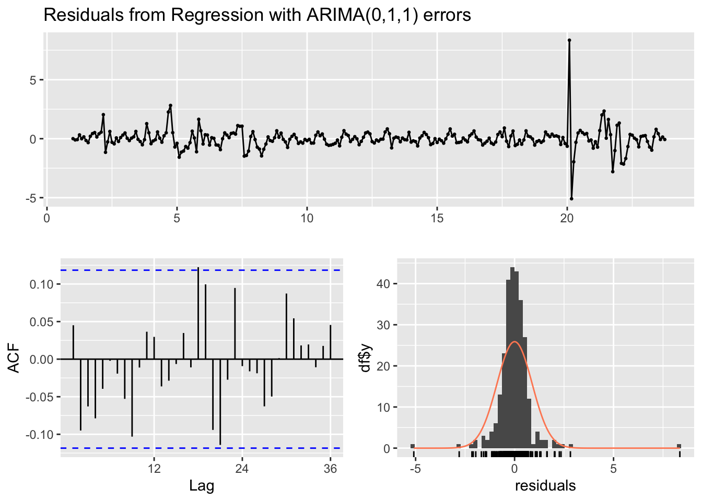
Ljung-Box test
data: Residuals from Regression with ARIMA(0,1,1) errors
Q* = 28.828, df = 23, p-value = 0.1861
Model df: 1. Total lags used: 24Regression: We first fit a linear model of gas price against OilPrice and Storage.
model_lm <- lm(GasPrice ~ OilPrice + Storage, data = df_model)
summary(model_lm)
Call:
lm(formula = GasPrice ~ OilPrice + Storage, data = df_model)
Residuals:
Min 1Q Median 3Q Max
-2.925 -1.216 -0.515 1.062 6.846
Coefficients:
Estimate Std. Error t value Pr(>|t|)
(Intercept) 5.256e+00 4.744e-01 11.080 < 2e-16 ***
OilPrice 2.745e-02 4.466e-03 6.147 2.82e-09 ***
Storage -5.169e-07 1.407e-07 -3.674 0.000288 ***
---
Signif. codes: 0 '***' 0.001 '**' 0.01 '*' 0.05 '.' 0.1 ' ' 1
Residual standard error: 1.776 on 271 degrees of freedom
Multiple R-squared: 0.1525, Adjusted R-squared: 0.1462
F-statistic: 24.38 on 2 and 271 DF, p-value: 1.831e-10The OilPrice coefficient is 0.02696 with a p-value < 0.001, which is significantly positive, indicating that for every 1 unit increase in oil price, the average increase in gas price is about 0.027 units; The Storage coefficient is -5.78e-07 with a p-value of < 0.001, which is also statistically significant, but the magnitude of its effect is very small; The R² of the regression model is 0.1632, indicating that the model can explain about 16% of the gas price fluctuations.
ARIMA on residuals: The residuals from the regression model were modeled using ARIMA to capture remaining autocorrelations.
resid_lm <- residuals(model_lm)
resid_ts <- ts(resid_lm, frequency = 12)
model_resid_arima <- auto.arima(resid_ts)
summary(model_resid_arima)Series: resid_ts
ARIMA(1,1,1)
Coefficients:
ar1 ma1
0.5966 -0.8749
s.e. 0.0786 0.0463
sigma^2 = 0.7922: log likelihood = -354.78
AIC=715.55 AICc=715.64 BIC=726.38
Training set error measures:
ME RMSE MAE MPE MAPE MASE
Training set -0.005067616 0.8851637 0.5157318 -8.256755 96.01527 0.4880944
ACF1
Training set -0.02738456We used an ARIMA model for the residuals of the regression model. The selected residual model is ARIMA(1,1,1)(0,0,1)[12].The final combined model yielded an in-sample RMSE of 0.8871, which is very close to that of the automatic ARIMAX model (0.8844). Residuals showed no significant autocorrelation (ACF1 = -0.028), confirming good model fit.
Cross Validation
errors <- c()
h <- 1
window_size <- 60
for (i in (window_size + 1):(length(y) - h)) {
y_train <- y[1:i]
x_train <- xreg_simple[1:i, ]
x_test <- matrix(xreg_simple[i + 1, ], nrow = 1)
y_true <- y[i + 1]
fit <- tryCatch({
Arima(y_train, order = c(0,1,1), seasonal = list(order = c(1,0,0), period = 12), xreg = x_train)
}, error = function(e) return(NULL))
if (!is.null(fit)) {
forecast_value <- forecast(fit, h = h, xreg = x_test)$mean
error <- y_true - forecast_value
errors <- c(errors, error)
}
}
rmse_auto_cv_manual <- sqrt(mean(errors^2, na.rm = TRUE))
cat("Auto Rolling CV RMSE:", round(rmse_auto_cv_manual, 4), "\n")Auto Rolling CV RMSE: 1.0427 Manually Cross Validation
errors_manual <- c()
h <- 1
window_size <- 60
for (i in (window_size + 1):(length(y) - h)) {
df_train <- df_model[1:i, ]
df_test <- df_model[i + 1, ]
lm_fit <- tryCatch({
lm(GasPrice ~ OilPrice + Storage, data = df_train)
}, error = function(e) return(NULL))
if (!is.null(lm_fit)) {
resid_train <- residuals(lm_fit)
resid_ts <- ts(resid_train, frequency = 12)
resid_fit <- tryCatch({
auto.arima(resid_ts)
}, error = function(e) return(NULL))
if (!is.null(resid_fit)) {
yhat_lm <- predict(lm_fit, newdata = df_test)
yhat_resid <- forecast(resid_fit, h = h)$mean
yhat_combined <- yhat_lm + yhat_resid
y_true <- df_test$GasPrice
error <- y_true - yhat_combined
errors_manual <- c(errors_manual, error)
}
}
}
rmse_manual_cv <- sqrt(mean(errors_manual^2, na.rm = TRUE))
cat("Manual Model Rolling CV RMSE:", round(rmse_manual_cv, 4), "\n")Manual Model Rolling CV RMSE: 1.0298 Cross Validation Compare Plot
rmse_values <- c(0.8843, 0.8871, 1.0394, 1.0265)
names_rmse <- c("Auto Fit", "Manual Fit", "Auto CV", "Manual CV")
barplot(rmse_values,
names.arg = names_rmse,
col = c("skyblue", "lightgreen", "orange", "lightpink"),
main = "Model RMSE Comparison (Fit vs CV)",
ylab = "RMSE",
ylim = c(0, max(rmse_values) + 0.1))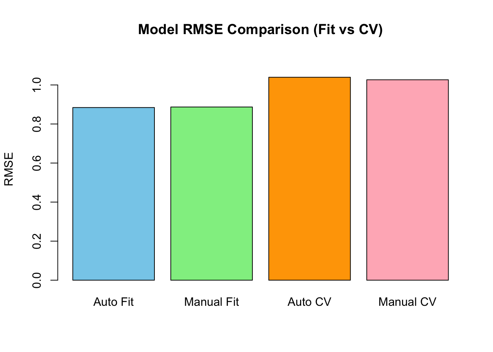
From the rolling cross-validation results, the RMSE of the automatic ARIMAX model is 1.0394, and that of the manual model (linear regression + ARIMA residual modeling) is 1.0265. Although the difference is not significant, the manual model is slightly better, so we choose the manual model as the final prediction model. So the best model is ARIMA(1,1,1)(0,0,1)[12]
Forecasting
resid_lm <- residuals(model_lm)
resid_ts <- ts(resid_lm, frequency = 12)
model_resid_final <- Arima(resid_ts,
order = c(1, 1, 1),
seasonal = list(order = c(0, 0, 1), period = 12))
summary(model_resid_final)Series: resid_ts
ARIMA(1,1,1)(0,0,1)[12]
Coefficients:
ar1 ma1 sma1
0.6000 -0.8807 0.0725
s.e. 0.0793 0.0469 0.0594
sigma^2 = 0.7906: log likelihood = -354.03
AIC=716.06 AICc=716.21 BIC=730.5
Training set error measures:
ME RMSE MAE MPE MAPE MASE
Training set -0.00501045 0.8826579 0.5124678 -7.590158 95.77595 0.4850054
ACF1
Training set -0.03132394future_xreg <- tail(df_model[, c("OilPrice", "Storage")], 6)
yhat_lm_future <- predict(model_lm, newdata = future_xreg)
yhat_resid_future <- forecast(model_resid_final, h = 6)$mean
yhat_manual_forecast <- yhat_lm_future + yhat_resid_future
last_date <- as.Date(paste0(tail(df_model$YearMonth, 1), "-01"))
future_dates <- seq(last_date %m+% months(1), by = "month", length.out = 6)
df_forecast <- data.frame(
Date = future_dates,
Predicted_GasPrice = as.numeric(yhat_manual_forecast)
)
ggplot(df_forecast, aes(x = Date, y = Predicted_GasPrice)) +
geom_line(color = "blue") +
geom_point(color = "red") +
labs(title = "Forecast of Gas Price (Manual ARIMAX Model)",
x = "Date", y = "Predicted Gas Price") +
theme_minimal()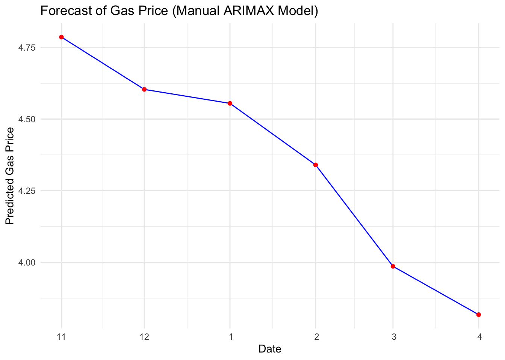
In order to generate realistic forecasts of natural gas prices, we use auto.arima() to build time series models for the exogenous variables OilPrice and Storage, respectively, and make 6-period forecasts for each. The forecasts are entered into the regression model as exogenous variables and combined with the residual ARIMA model to produce the final forecasts.
The Model Equation is: \[ (1 - 0.6000 B)(1 - B)y_t = (1 - 0.8807 B)(1 + 0.0725 B^{12})\varepsilon_t \] The forecast shows an overall downward trend in natural gas prices over the next six months. Combining our modeling findings for OilPrice and Storage: -Crude oil prices have a significant positive impact on natural gas prices; -Increases in storage could slightly dampen gas price increases; -The recent decline in oil price volatility may be a significant driver of downward gas prices; Therefore, in the current market environment, if oil prices continue to be low, gas prices may decline further. However, a short-term rebound cannot be ruled out due to seasonality and lag structure.
df_energy <- read.csv("merge_gas_oil.csv")
df_gdp <- read.csv("GDP.csv")
df_energy <- df_energy %>%
mutate(YearMonth = ym(YearMonth))
df_gdp <- df_gdp %>%
mutate(YearMonth = ymd(observation_date)) %>%
mutate(YearMonth = floor_date(YearMonth, unit = "month"))
df_var <- inner_join(df_energy, df_gdp, by = "YearMonth")
head(df_var) YearMonth GasPrice Storage Consumption ElecPrice OilPrice observation_date
1 2014-10-01 5.16 3587270 1912810 4.23 84.39696 2014-10-01
2 2015-01-01 4.48 2407122 3114982 4.31 47.21900 2015-01-01
3 2015-04-01 3.93 1793086 2007922 3.24 54.45286 2015-04-01
4 2015-07-01 4.65 2924427 2067714 3.23 50.90091 2015-07-01
5 2015-10-01 4.00 3942279 1987310 3.04 46.22364 2015-10-01
6 2016-01-01 3.39 2938089 3091695 3.18 31.68316 2016-01-01
GDP
1 17912.08
2 18063.53
3 18279.78
4 18401.63
5 18435.14
6 18525.93Time Series Plot
df_var_model1 <- df_var %>%
dplyr::select(YearMonth, GasPrice, OilPrice, GDP) %>%
na.omit() %>%
mutate(Date = YearMonth)
df_long <- df_var_model1 %>%
pivot_longer(cols = c("GasPrice", "OilPrice", "GDP"),
names_to = "Variable",
values_to = "Value")
ggplot(df_long, aes(x = Date, y = Value)) +
geom_line(color = "steelblue") +
facet_wrap(~Variable, scales = "free_y", ncol = 1) +
xlab("Year") + ylab("") +
ggtitle("Monthly Time Series: Gas Price, Oil Price, and GDP")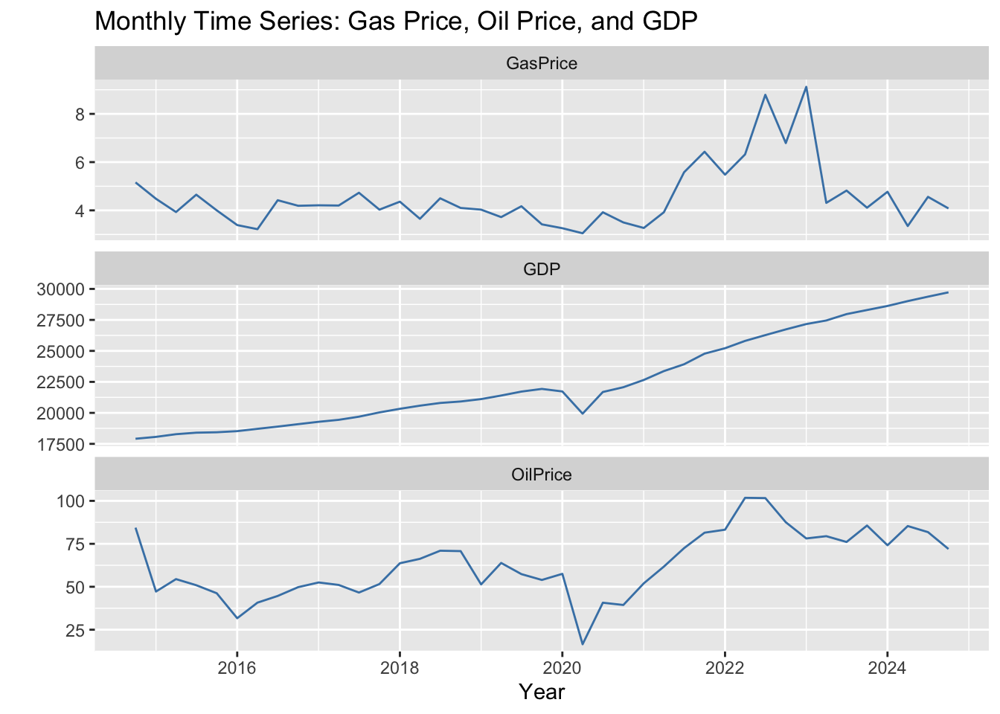
VARselection
start_year <- year(min(df_var_model1$Date))
start_month <- month(min(df_var_model1$Date))
ts_var_model1 <- ts(df_var_model1[, c("GasPrice", "OilPrice", "GDP")],
start = c(start_year, start_month),
frequency = 12)
VARselect(ts_var_model1, lag.max = 12, type = "both")$selection
AIC(n) HQ(n) SC(n) FPE(n)
9 9 9 10
$criteria
1 2 3 4 5
AIC(n) 1.697592e+01 1.729102e+01 1.747989e+01 1.745230e+01 1.758046e+01
HQ(n) 1.719741e+01 1.764541e+01 1.796717e+01 1.807248e+01 1.833353e+01
SC(n) 1.768314e+01 1.842258e+01 1.903578e+01 1.943252e+01 1.998501e+01
FPE(n) 2.382766e+07 3.376848e+07 4.399334e+07 4.938691e+07 7.216174e+07
6 7 8 9 10 11 12
AIC(n) 1.700969e+01 1.435565e+01 10.36014 -Inf -Inf -Inf -Inf
HQ(n) 1.789566e+01 1.537452e+01 11.51190 -Inf -Inf -Inf -Inf
SC(n) 1.983858e+01 1.760887e+01 14.03769 -Inf -Inf -Inf -Inf
FPE(n) 6.280489e+07 9.582838e+06 897161.29924 NaN 0 0 0When using the VARselect() function for lag order selection, the information criteria AIC, HQ and SC consistently recommend the use of VAR(9), while the FPE criterion recommends VAR(10). Therefore, we try to include VAR(10) in the model comparison and perform Rolling Cross-Validation with VAR(8) and VAR(9). However, in actual runs we found that the VAR(10) model could not be successfully fitted in multiple training windows. This may be due to the mismatch between insufficient sample size and model complexity
Cross Validation
rolling_cv_var <- function(ts_data, p, forecast_horizon = 1, rolling_window = 30) {
ts_data_mat <- as.matrix(ts_data)
n <- nrow(ts_data_mat)
if(n < rolling_window + forecast_horizon) {
stop("Not enough data for rolling window CV. Please reduce rolling_window or forecast_horizon.")
}
errors <- c()
ts_start <- start(ts_data)
ts_freq <- frequency(ts_data)
for(i in seq(rolling_window, n - forecast_horizon)) {
train_data <- ts_data_mat[1:i, ]
train_ts <- ts(train_data, start = ts_start, frequency = ts_freq)
var_fit <- tryCatch(
{
VAR(train_ts, p = p, type = "both")
},
error = function(e) {
message(sprintf("Error fitting VAR(p=%d) at i=%d: %s", p, i, e$message))
return(NULL)
},
warning = function(w) {
message(sprintf("Warning fitting VAR(p=%d) at i=%d: %s", p, i, w$message))
return(NULL)
}
)
if(is.null(var_fit)) {
errors <- c(errors, NA)
next
}
pred <- tryCatch(
{
predict(var_fit, n.ahead = forecast_horizon)
},
error = function(e) {
message(sprintf("Error forecasting at i=%d: %s", i, e$message))
return(NULL)
}
)
if(is.null(pred)) {
errors <- c(errors, NA)
next
}
pred_values <- pred$fcst[[1]][, "fcst"]
if(any(is.na(pred_values)) || any(is.infinite(pred_values))) {
message(sprintf("Forecast values contain NA or Inf at i=%d", i))
errors <- c(errors, NA)
next
}
true_values <- ts_data_mat[(i + 1):(i + forecast_horizon), 1]
errors <- c(errors, true_values - pred_values)
}
rmse <- sqrt(mean(errors^2, na.rm = TRUE))
return(rmse)
}
rmse_p8 <- rolling_cv_var(ts_var_model1, p = 8, forecast_horizon = 1, rolling_window = 30)
rmse_p9 <- rolling_cv_var(ts_var_model1, p = 9, forecast_horizon = 1, rolling_window = 30)
rmse_results <- data.frame(
Model = c("VAR(8)", "VAR(9)"),
RMSE = c(rmse_p8, rmse_p9)
)
print(rmse_results) Model RMSE
1 VAR(8) 9.080893
2 VAR(9) 24.246844RMSE Comparison Plot
# Visualize the comparison
ggplot(rmse_results, aes(x = Model, y = RMSE, fill = Model)) +
geom_bar(stat = "identity") +
ggtitle("Rolling Window CV: RMSE Comparison for VAR(8) vs VAR(9)") +
theme_minimal()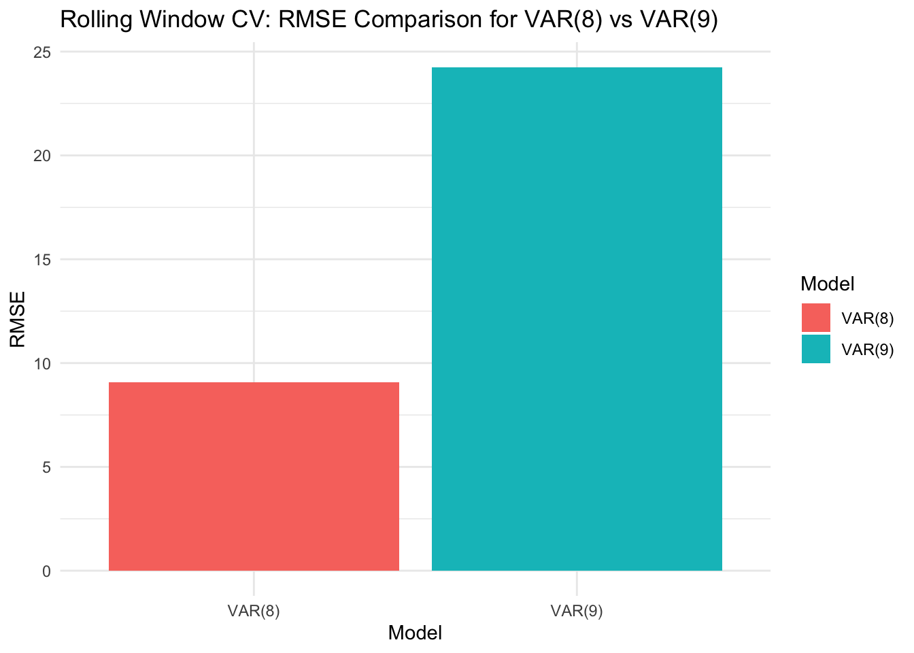
Although the lag order recommended by the information criterion (AIC, HQ, SC) is p = 9 when using the VARselect() function, VAR(8) significantly outperforms VAR(9) in the actual rolling window cross-validation.In addition, VAR(10), although it performs the best under the FPE criterion, has been ruled out in cross-validation due to the singularity of covariance matrices (singular) could not function properly and has been excluded. Therefore, combining the model stability and forecasting performance, we finally chose VAR(8) as the multivariate time series forecasting model in this study.
VAR(8) Forecasting: Gas Price Based on Oil Price and GDP
final_var_model <- VAR(ts_var_model1, p = 8, type = "both")
summary(final_var_model)
VAR Estimation Results:
=========================
Endogenous variables: GasPrice, OilPrice, GDP
Deterministic variables: both
Sample size: 33
Log Likelihood: -327.692
Roots of the characteristic polynomial:
1.072 1.072 1.057 1.057 1.038 1.01 1.01 0.9509 0.9509 0.9471 0.9471 0.9437 0.9437 0.9403 0.9403 0.9247 0.9247 0.9055 0.9055 0.8523 0.8523 0.7272 0.7272 0.1851
Call:
VAR(y = ts_var_model1, p = 8, type = "both")
Estimation results for equation GasPrice:
=========================================
GasPrice = GasPrice.l1 + OilPrice.l1 + GDP.l1 + GasPrice.l2 + OilPrice.l2 + GDP.l2 + GasPrice.l3 + OilPrice.l3 + GDP.l3 + GasPrice.l4 + OilPrice.l4 + GDP.l4 + GasPrice.l5 + OilPrice.l5 + GDP.l5 + GasPrice.l6 + OilPrice.l6 + GDP.l6 + GasPrice.l7 + OilPrice.l7 + GDP.l7 + GasPrice.l8 + OilPrice.l8 + GDP.l8 + const + trend
Estimate Std. Error t value Pr(>|t|)
GasPrice.l1 -7.885e-02 4.059e-01 -0.194 0.852
OilPrice.l1 3.006e-02 5.768e-02 0.521 0.618
GDP.l1 -5.629e-04 1.292e-03 -0.436 0.676
GasPrice.l2 4.278e-01 3.568e-01 1.199 0.270
OilPrice.l2 3.606e-02 5.953e-02 0.606 0.564
GDP.l2 -1.150e-04 1.408e-03 -0.082 0.937
GasPrice.l3 1.054e-02 3.444e-01 0.031 0.976
OilPrice.l3 -1.026e-02 5.635e-02 -0.182 0.861
GDP.l3 4.386e-04 1.512e-03 0.290 0.780
GasPrice.l4 7.021e-02 3.522e-01 0.199 0.848
OilPrice.l4 -1.841e-02 5.587e-02 -0.330 0.751
GDP.l4 1.483e-04 1.692e-03 0.088 0.933
GasPrice.l5 6.330e-03 3.711e-01 0.017 0.987
OilPrice.l5 -4.066e-02 7.409e-02 -0.549 0.600
GDP.l5 8.245e-04 1.710e-03 0.482 0.644
GasPrice.l6 -1.617e-01 4.560e-01 -0.355 0.733
OilPrice.l6 1.760e-02 8.505e-02 0.207 0.842
GDP.l6 -8.281e-04 1.920e-03 -0.431 0.679
GasPrice.l7 -8.232e-01 6.070e-01 -1.356 0.217
OilPrice.l7 -4.932e-02 6.580e-02 -0.749 0.478
GDP.l7 1.716e-03 1.268e-03 1.353 0.218
GasPrice.l8 -1.338e-01 9.198e-01 -0.145 0.888
OilPrice.l8 2.611e-02 4.703e-02 0.555 0.596
GDP.l8 -4.925e-04 7.686e-04 -0.641 0.542
const -1.183e+01 1.748e+01 -0.677 0.520
trend -1.674e-01 3.467e-01 -0.483 0.644
Residual standard error: 1.146 on 7 degrees of freedom
Multiple R-Squared: 0.8603, Adjusted R-squared: 0.3616
F-statistic: 1.725 on 25 and 7 DF, p-value: 0.2343
Estimation results for equation OilPrice:
=========================================
OilPrice = GasPrice.l1 + OilPrice.l1 + GDP.l1 + GasPrice.l2 + OilPrice.l2 + GDP.l2 + GasPrice.l3 + OilPrice.l3 + GDP.l3 + GasPrice.l4 + OilPrice.l4 + GDP.l4 + GasPrice.l5 + OilPrice.l5 + GDP.l5 + GasPrice.l6 + OilPrice.l6 + GDP.l6 + GasPrice.l7 + OilPrice.l7 + GDP.l7 + GasPrice.l8 + OilPrice.l8 + GDP.l8 + const + trend
Estimate Std. Error t value Pr(>|t|)
GasPrice.l1 3.804577 3.604745 1.055 0.326
OilPrice.l1 0.286868 0.512241 0.560 0.593
GDP.l1 -0.001759 0.011477 -0.153 0.883
GasPrice.l2 -0.867926 3.168719 -0.274 0.792
OilPrice.l2 -0.042595 0.528708 -0.081 0.938
GDP.l2 0.007212 0.012505 0.577 0.582
GasPrice.l3 1.752520 3.058845 0.573 0.585
OilPrice.l3 -0.006096 0.500389 -0.012 0.991
GDP.l3 -0.010434 0.013429 -0.777 0.463
GasPrice.l4 0.921104 3.128115 0.294 0.777
OilPrice.l4 -0.928759 0.496169 -1.872 0.103
GDP.l4 0.014433 0.015030 0.960 0.369
GasPrice.l5 4.046139 3.295459 1.228 0.259
OilPrice.l5 0.889200 0.657981 1.351 0.219
GDP.l5 -0.021175 0.015184 -1.395 0.206
GasPrice.l6 4.760134 4.049843 1.175 0.278
OilPrice.l6 -0.314087 0.755279 -0.416 0.690
GDP.l6 -0.001824 0.017047 -0.107 0.918
GasPrice.l7 10.029229 5.390281 1.861 0.105
OilPrice.l7 -0.711555 0.584348 -1.218 0.263
GDP.l7 0.003900 0.011258 0.346 0.739
GasPrice.l8 5.365558 8.168091 0.657 0.532
OilPrice.l8 -0.299841 0.417631 -0.718 0.496
GDP.l8 -0.005871 0.006826 -0.860 0.418
const 218.414059 155.191028 1.407 0.202
trend 4.532756 3.078728 1.472 0.184
Residual standard error: 10.18 on 7 degrees of freedom
Multiple R-Squared: 0.9338, Adjusted R-squared: 0.6973
F-statistic: 3.949 on 25 and 7 DF, p-value: 0.03374
Estimation results for equation GDP:
====================================
GDP = GasPrice.l1 + OilPrice.l1 + GDP.l1 + GasPrice.l2 + OilPrice.l2 + GDP.l2 + GasPrice.l3 + OilPrice.l3 + GDP.l3 + GasPrice.l4 + OilPrice.l4 + GDP.l4 + GasPrice.l5 + OilPrice.l5 + GDP.l5 + GasPrice.l6 + OilPrice.l6 + GDP.l6 + GasPrice.l7 + OilPrice.l7 + GDP.l7 + GasPrice.l8 + OilPrice.l8 + GDP.l8 + const + trend
Estimate Std. Error t value Pr(>|t|)
GasPrice.l1 267.07698 178.80309 1.494 0.179
OilPrice.l1 -12.89947 25.40825 -0.508 0.627
GDP.l1 0.41425 0.56929 0.728 0.490
GasPrice.l2 81.21487 157.17523 0.517 0.621
OilPrice.l2 13.88499 26.22507 0.529 0.613
GDP.l2 -0.10774 0.62026 -0.174 0.867
GasPrice.l3 -42.99317 151.72524 -0.283 0.785
OilPrice.l3 -13.84152 24.82035 -0.558 0.594
GDP.l3 0.02392 0.66612 0.036 0.972
GasPrice.l4 182.18791 155.16119 1.174 0.279
OilPrice.l4 -25.02001 24.61105 -1.017 0.343
GDP.l4 0.16249 0.74550 0.218 0.834
GasPrice.l5 109.09684 163.46181 0.667 0.526
OilPrice.l5 23.87512 32.63725 0.732 0.488
GDP.l5 -0.38992 0.75316 -0.518 0.621
GasPrice.l6 222.58422 200.88086 1.108 0.304
OilPrice.l6 -9.74359 37.46345 -0.260 0.802
GDP.l6 -0.20496 0.84557 -0.242 0.815
GasPrice.l7 350.58867 267.36945 1.311 0.231
OilPrice.l7 -38.34675 28.98493 -1.323 0.227
GDP.l7 0.46375 0.55845 0.830 0.434
GasPrice.l8 314.61566 405.15477 0.777 0.463
OilPrice.l8 -15.67848 20.71538 -0.757 0.474
GDP.l8 0.02396 0.33858 0.071 0.946
const 7348.91380 7697.80702 0.955 0.372
trend 215.78323 152.71148 1.413 0.201
Residual standard error: 504.9 on 7 degrees of freedom
Multiple R-Squared: 0.9953, Adjusted R-squared: 0.9786
F-statistic: 59.41 on 25 and 7 DF, p-value: 5.569e-06
Covariance matrix of residuals:
GasPrice OilPrice GDP
GasPrice 1.314 6.948 359.4
OilPrice 6.948 103.620 3830.2
GDP 359.409 3830.196 254943.9
Correlation matrix of residuals:
GasPrice OilPrice GDP
GasPrice 1.0000 0.5955 0.6210
OilPrice 0.5955 1.0000 0.7452
GDP 0.6210 0.7452 1.0000Equation \[\begin{aligned} \text{GasPrice}t &=\,-0.07885\,\text{GasPrice}{t-1} +0.03006\,\text{OilPrice}{t-1} -0.0005629\,\text{GDP}{t-1}\\ &\quad +0.4278\,\text{GasPrice}{t-2} +0.03606\,\text{OilPrice}{t-2} -0.0001150\,\text{GDP}{t-2}\\ &\quad +0.01054\,\text{GasPrice}{t-3} -0.01026\,\text{OilPrice}{t-3} +0.0004386\,\text{GDP}{t-3}\\ &\quad +0.07021\,\text{GasPrice}{t-4} -0.01841\,\text{OilPrice}{t-4} +0.0001483\,\text{GDP}{t-4}\\ &\quad +0.006330\,\text{GasPrice}{t-5} -0.04066\,\text{OilPrice}{t-5} +0.0008245\,\text{GDP}{t-5}\\ &\quad -0.1617\,\text{GasPrice}{t-6} +0.01760\,\text{OilPrice}{t-6} -0.0008281\,\text{GDP}{t-6}\\ &\quad -0.8232\,\text{GasPrice}{t-7} -0.04932\,\text{OilPrice}{t-7} +0.001716\,\text{GDP}{t-7}\\ &\quad -0.1338\,\text{GasPrice}{t-8} +0.02611\,\text{OilPrice}{t-8} -0.0004925\,\text{GDP}{t-8}\\ &\quad -11.83\ \;+\;-0.1674\;\times t\;+\;u{1,t} \end{aligned}\]
\[\begin{aligned} \text{OilPrice}t &=\;3.8046\,\text{GasPrice}{t-1} +0.2869\,\text{OilPrice}{t-1} -0.001759\,\text{GDP}{t-1}\\ &\quad -0.8679\,\text{GasPrice}{t-2} -0.04260\,\text{OilPrice}{t-2} +0.007212\,\text{GDP}{t-2}\\ &\quad +1.7525\,\text{GasPrice}{t-3} -0.006096\,\text{OilPrice}{t-3} -0.010434\,\text{GDP}{t-3}\\ &\quad +0.9211\,\text{GasPrice}{t-4} -0.9288\,\text{OilPrice}{t-4} +0.014433\,\text{GDP}{t-4}\\ &\quad +4.0461\,\text{GasPrice}{t-5} +0.8892\,\text{OilPrice}{t-5} -0.021175\,\text{GDP}{t-5}\\ &\quad +4.7601\,\text{GasPrice}{t-6} -0.3141\,\text{OilPrice}{t-6} -0.001824\,\text{GDP}{t-6}\\ &\quad +10.0292\,\text{GasPrice}{t-7} -0.7116\,\text{OilPrice}{t-7} +0.003900\,\text{GDP}{t-7}\\ &\quad +5.3656\,\text{GasPrice}{t-8} -0.2998\,\text{OilPrice}{t-8} -0.005871\,\text{GDP}{t-8}\\ &\quad +218.41\ \;+\;4.5328\;\times t\;+\;u{2,t} \end{aligned}\]
\[\begin{aligned} \text{GDP}t &=\;267.08\,\text{GasPrice}{t-1} -12.8995\,\text{OilPrice}{t-1} +0.4143\,\text{GDP}{t-1}\\ &\quad +81.215\,\text{GasPrice}{t-2} +13.885\,\text{OilPrice}{t-2} -0.1077\,\text{GDP}{t-2}\\ &\quad -42.993\,\text{GasPrice}{t-3} -13.842\,\text{OilPrice}{t-3} +0.02392\,\text{GDP}{t-3}\\ &\quad +182.19\,\text{GasPrice}{t-4} -25.020\,\text{OilPrice}{t-4} +0.1625\,\text{GDP}{t-4}\\ &\quad +109.10\,\text{GasPrice}{t-5} +23.875\,\text{OilPrice}{t-5} -0.3899\,\text{GDP}{t-5}\\ &\quad +222.58\,\text{GasPrice}{t-6} -9.7436\,\text{OilPrice}{t-6} -0.20496\,\text{GDP}{t-6}\\ &\quad +350.59\,\text{GasPrice}{t-7} -38.347\,\text{OilPrice}{t-7} +0.4638\,\text{GDP}{t-7}\\ &\quad +314.62\,\text{GasPrice}{t-8} -15.678\,\text{OilPrice}{t-8} +0.02396\,\text{GDP}{t-8}\\ &\quad +7348.91\ \;-\;9.154\;\times t\;+\;u{3,t} \end{aligned}\]
forecast_var8 <- predict(final_var_model, n.ahead = 6)
forecast_var8$fcst$GasPrice fcst lower upper CI
[1,] 7.228437 4.981837 9.475038 2.246601
[2,] 7.370126 5.079565 9.660687 2.290561
[3,] 7.224465 4.524419 9.924510 2.700045
[4,] 7.161051 4.436654 9.885447 2.724396
[5,] 7.845036 4.975419 10.714653 2.869617
[6,] 9.137622 6.206689 12.068556 2.930934forecast_var8$fcst$OilPrice fcst lower upper CI
[1,] 49.754580 29.803337 69.70582 19.95124
[2,] 15.613423 -7.447989 38.67484 23.06141
[3,] 6.664809 -17.193306 30.52292 23.85812
[4,] 10.544752 -14.847908 35.93741 25.39266
[5,] 28.161663 1.091389 55.23194 27.07027
[6,] 46.562250 17.170558 75.95394 29.39169forecast_var8$fcst$GDP fcst lower upper CI
[1,] 29811.31 28821.69 30800.93 989.6244
[2,] 28879.65 27639.48 30119.81 1240.1656
[3,] 29571.15 28259.38 30882.91 1311.7626
[4,] 30037.09 28686.85 31387.34 1350.2444
[5,] 31214.77 29814.90 32614.65 1399.8760
[6,] 32557.06 31052.23 34061.88 1504.8252ts_start <- start(ts_var_model1)
start_year <- ts_start[1]
start_month <- ts_start[2]
n_hist <- nrow(ts_var_model1)
n_fcst <- nrow(forecast_var8$fcst$GasPrice)
all_dates <- seq(
from = as.Date(paste0(start_year, "-", sprintf("%02d", start_month), "-01")),
by = "month",
length.out = n_hist + n_fcst
)
gas_fcst <- forecast_var8$fcst$GasPrice[ , "fcst"]
oil_fcst <- forecast_var8$fcst$OilPrice[ , "fcst"]
gdp_fcst <- forecast_var8$fcst$GDP[ , "fcst"]
fcst_dates <- tail(all_dates, n_fcst)
df_three_fc <- data.frame(
Date = fcst_dates,
GasPrice = gas_fcst,
OilPrice = oil_fcst,
GDP = gdp_fcst
)
df_long <- pivot_longer(
df_three_fc,
cols = -Date,
names_to = "Variable",
values_to = "Forecast"
)
ggplot(df_long, aes(x = Date, y = Forecast, color = Variable)) +
geom_line(size = 1) +
labs(
title = "6-Month Forecast from VAR(8)",
x = "Date",
y = "Forecast Value"
) +
theme_minimal()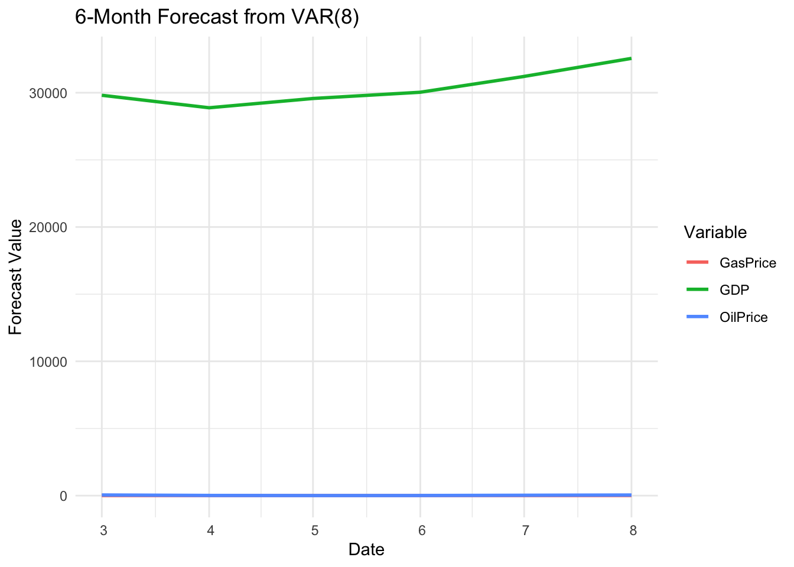
We used a VAR(8) model to forecast gas prices using oil price and GDP as explanatory variables. Although VAR(9) was suggested by information criteria (AIC, SC, etc.), cross-validation results indicated that VAR(8) yielded a significantly lower RMSE (9.08 vs 24.25), and was thus selected as the final model.
Based on the VAR(8) model, we forecasted gas prices for the next 6 months using oil prices and GDP as predictors. The forecast results show an upward trend in gas prices, as indicated by the red line in the graph.
Several key insights emerge: • Short-term increase: The gas price is projected to increase steadily over the forecast horizon. This may reflect anticipated changes in oil price or macroeconomic growth captured by GDP. • Model responsiveness: The VAR(8) model reacts to recent volatility in gas prices and oil prices, suggesting it is sensitive to dynamic changes across variables.
df <- read.csv("merge_gas_oil.csv")
head(df$YearMonth)[1] "1986-01" "1986-02" "1986-03" "1986-04" "1986-05" "1986-06"df_var2 <- df %>%
mutate(Date = ym(YearMonth)) %>%
dplyr::select(Date, GasPrice, OilPrice, Consumption) %>%
na.omit()
df_long <- df_var2 %>%
pivot_longer(cols = c("GasPrice", "OilPrice", "Consumption"),
names_to = "Variable", values_to = "Value")
ggplot(df_long, aes(x = Date, y = Value)) +
geom_line(color = "steelblue") +
facet_wrap(~Variable, scales = "free_y", ncol = 1) +
labs(title = "Time Series: Gas Price, Oil Price, Consumption",
x = "Year", y = "")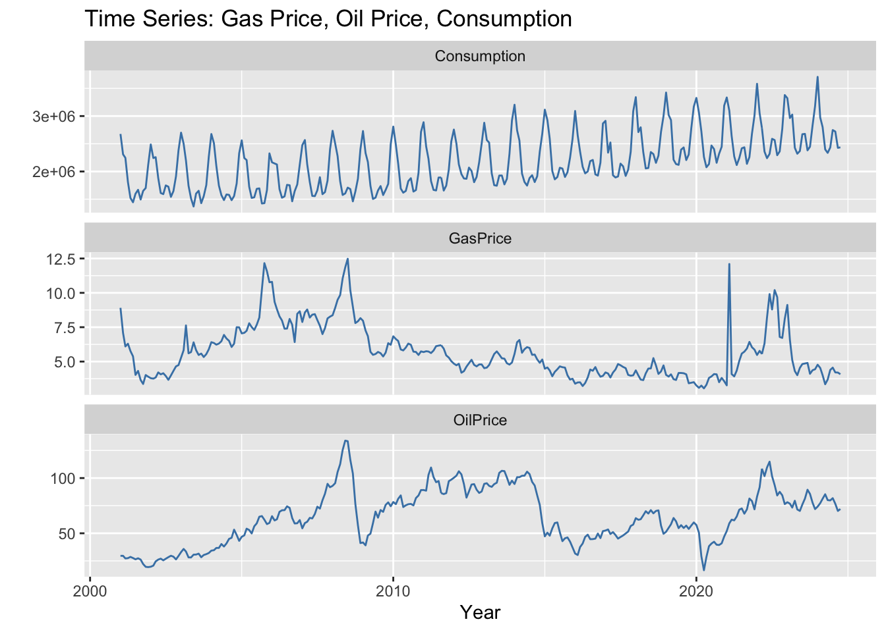
library(vars)
ts_var2 <- ts(df_var2[, c("GasPrice", "OilPrice", "Consumption")],
start = c(year(min(df_var2$Date)), month(min(df_var2$Date))),
frequency = 12)
VARselect(ts_var2, lag.max = 10, type = "both")$selection
AIC(n) HQ(n) SC(n) FPE(n)
10 10 2 10
$criteria
1 2 3 4 5
AIC(n) 2.841530e+01 2.790525e+01 2.791123e+01 2.790052e+01 2.793017e+01
HQ(n) 2.849425e+01 2.803158e+01 2.808493e+01 2.812160e+01 2.819863e+01
SC(n) 2.861206e+01 2.822007e+01 2.834410e+01 2.845145e+01 2.859916e+01
FPE(n) 2.190846e+12 1.315585e+12 1.323569e+12 1.309650e+12 1.349345e+12
6 7 8 9 10
AIC(n) 2.781191e+01 2.771677e+01 2.767452e+01 2.766971e+01 2.744708e+01
HQ(n) 2.812774e+01 2.807997e+01 2.808510e+01 2.812766e+01 2.795241e+01
SC(n) 2.859895e+01 2.862187e+01 2.869768e+01 2.881093e+01 2.870635e+01
FPE(n) 1.199195e+12 1.090803e+12 1.046217e+12 1.041882e+12 8.346046e+11Based on the result, AIC(n) and FPE(n) are both optimal at p=10, SC(n) is optimal at p=1, HQ(n) is optimal at p=2
so we will be fit them using VAR()
var_fit_p1 <- VAR(ts_var2, p = 1, type = "both")
summary(var_fit_p1)
VAR Estimation Results:
=========================
Endogenous variables: GasPrice, OilPrice, Consumption
Deterministic variables: both
Sample size: 285
Log Likelihood: -5239.819
Roots of the characteristic polynomial:
0.9673 0.8119 0.7116
Call:
VAR(y = ts_var2, p = 1, type = "both")
Estimation results for equation GasPrice:
=========================================
GasPrice = GasPrice.l1 + OilPrice.l1 + Consumption.l1 + const + trend
Estimate Std. Error t value Pr(>|t|)
GasPrice.l1 8.084e-01 3.466e-02 23.324 < 2e-16 ***
OilPrice.l1 7.733e-03 2.655e-03 2.913 0.00387 **
Consumption.l1 2.041e-08 1.345e-07 0.152 0.87944
const 8.666e-01 3.301e-01 2.625 0.00913 **
trend -2.340e-03 9.669e-04 -2.420 0.01616 *
---
Signif. codes: 0 '***' 0.001 '**' 0.01 '*' 0.05 '.' 0.1 ' ' 1
Residual standard error: 0.8935 on 280 degrees of freedom
Multiple R-Squared: 0.7832, Adjusted R-squared: 0.7801
F-statistic: 252.9 on 4 and 280 DF, p-value: < 2.2e-16
Estimation results for equation OilPrice:
=========================================
OilPrice = GasPrice.l1 + OilPrice.l1 + Consumption.l1 + const + trend
Estimate Std. Error t value Pr(>|t|)
GasPrice.l1 -2.592e-02 2.255e-01 -0.115 0.9086
OilPrice.l1 9.735e-01 1.727e-02 56.367 <2e-16 ***
Consumption.l1 1.555e-06 8.748e-07 1.778 0.0765 .
const -6.430e-01 2.148e+00 -0.299 0.7649
trend -5.127e-03 6.290e-03 -0.815 0.4157
---
Signif. codes: 0 '***' 0.001 '**' 0.01 '*' 0.05 '.' 0.1 ' ' 1
Residual standard error: 5.813 on 280 degrees of freedom
Multiple R-Squared: 0.9464, Adjusted R-squared: 0.9457
F-statistic: 1237 on 4 and 280 DF, p-value: < 2.2e-16
Estimation results for equation Consumption:
============================================
Consumption = GasPrice.l1 + OilPrice.l1 + Consumption.l1 + const + trend
Estimate Std. Error t value Pr(>|t|)
GasPrice.l1 -4.060e+03 1.068e+04 -0.380 0.704055
OilPrice.l1 -6.227e+02 8.178e+02 -0.761 0.447027
Consumption.l1 7.090e-01 4.143e-02 17.113 < 2e-16 ***
const 5.401e+05 1.017e+05 5.311 2.23e-07 ***
trend 1.107e+03 2.979e+02 3.718 0.000243 ***
---
Signif. codes: 0 '***' 0.001 '**' 0.01 '*' 0.05 '.' 0.1 ' ' 1
Residual standard error: 275300 on 280 degrees of freedom
Multiple R-Squared: 0.694, Adjusted R-squared: 0.6896
F-statistic: 158.7 on 4 and 280 DF, p-value: < 2.2e-16
Covariance matrix of residuals:
GasPrice OilPrice Consumption
GasPrice 7.984e-01 7.118e-01 1.403e+04
OilPrice 7.118e-01 3.379e+01 -1.731e+05
Consumption 1.403e+04 -1.731e+05 7.578e+10
Correlation matrix of residuals:
GasPrice OilPrice Consumption
GasPrice 1.00000 0.1370 0.05703
OilPrice 0.13704 1.0000 -0.10814
Consumption 0.05703 -0.1081 1.00000var_fit_p2 <- VAR(ts_var2, p = 2, type = "both")
summary(var_fit_p2)
VAR Estimation Results:
=========================
Endogenous variables: GasPrice, OilPrice, Consumption
Deterministic variables: both
Sample size: 284
Log Likelihood: -5141.713
Roots of the characteristic polynomial:
0.9347 0.8732 0.749 0.749 0.3538 0.2041
Call:
VAR(y = ts_var2, p = 2, type = "both")
Estimation results for equation GasPrice:
=========================================
GasPrice = GasPrice.l1 + OilPrice.l1 + Consumption.l1 + GasPrice.l2 + OilPrice.l2 + Consumption.l2 + const + trend
Estimate Std. Error t value Pr(>|t|)
GasPrice.l1 6.770e-01 5.932e-02 11.414 < 2e-16 ***
OilPrice.l1 1.765e-02 9.158e-03 1.927 0.05495 .
Consumption.l1 3.776e-07 1.919e-07 1.968 0.05005 .
GasPrice.l2 1.689e-01 5.885e-02 2.869 0.00444 **
OilPrice.l2 -1.173e-02 9.225e-03 -1.271 0.20463
Consumption.l2 -4.510e-07 1.911e-07 -2.360 0.01898 *
const 8.673e-01 3.426e-01 2.532 0.01191 *
trend -1.586e-03 9.873e-04 -1.606 0.10941
---
Signif. codes: 0 '***' 0.001 '**' 0.01 '*' 0.05 '.' 0.1 ' ' 1
Residual standard error: 0.8762 on 276 degrees of freedom
Multiple R-Squared: 0.7942, Adjusted R-squared: 0.7889
F-statistic: 152.1 on 7 and 276 DF, p-value: < 2.2e-16
Estimation results for equation OilPrice:
=========================================
OilPrice = GasPrice.l1 + OilPrice.l1 + Consumption.l1 + GasPrice.l2 + OilPrice.l2 + Consumption.l2 + const + trend
Estimate Std. Error t value Pr(>|t|)
GasPrice.l1 2.117e-01 3.688e-01 0.574 0.566
OilPrice.l1 1.305e+00 5.693e-02 22.913 < 2e-16 ***
Consumption.l1 4.022e-07 1.193e-06 0.337 0.736
GasPrice.l2 -1.590e-01 3.659e-01 -0.435 0.664
OilPrice.l2 -3.450e-01 5.735e-02 -6.016 5.65e-09 ***
Consumption.l2 1.317e-06 1.188e-06 1.108 0.269
const -8.822e-01 2.130e+00 -0.414 0.679
trend -3.044e-03 6.138e-03 -0.496 0.620
---
Signif. codes: 0 '***' 0.001 '**' 0.01 '*' 0.05 '.' 0.1 ' ' 1
Residual standard error: 5.447 on 276 degrees of freedom
Multiple R-Squared: 0.9533, Adjusted R-squared: 0.9521
F-statistic: 805.1 on 7 and 276 DF, p-value: < 2.2e-16
Estimation results for equation Consumption:
============================================
Consumption = GasPrice.l1 + OilPrice.l1 + Consumption.l1 + GasPrice.l2 + OilPrice.l2 + Consumption.l2 + const + trend
Estimate Std. Error t value Pr(>|t|)
GasPrice.l1 1.536e+03 1.547e+04 0.099 0.9210
OilPrice.l1 -4.490e+03 2.389e+03 -1.879 0.0613 .
Consumption.l1 1.104e+00 5.005e-02 22.065 < 2e-16 ***
GasPrice.l2 -7.195e+03 1.535e+04 -0.469 0.6397
OilPrice.l2 3.833e+03 2.406e+03 1.593 0.1123
Consumption.l2 -5.391e-01 4.986e-02 -10.812 < 2e-16 ***
const 8.002e+05 8.936e+04 8.955 < 2e-16 ***
trend 1.569e+03 2.576e+02 6.093 3.7e-09 ***
---
Signif. codes: 0 '***' 0.001 '**' 0.01 '*' 0.05 '.' 0.1 ' ' 1
Residual standard error: 228600 on 276 degrees of freedom
Multiple R-Squared: 0.792, Adjusted R-squared: 0.7867
F-statistic: 150.1 on 7 and 276 DF, p-value: < 2.2e-16
Covariance matrix of residuals:
GasPrice OilPrice Consumption
GasPrice 0.7677 7.187e-01 -8.661e+02
OilPrice 0.7187 2.967e+01 -2.658e+04
Consumption -866.0623 -2.658e+04 5.224e+10
Correlation matrix of residuals:
GasPrice OilPrice Consumption
GasPrice 1.000000 0.15059 -0.004325
OilPrice 0.150591 1.00000 -0.021354
Consumption -0.004325 -0.02135 1.000000var_fit_p10 <- VAR(ts_var2, p = 10, type = "both")
summary(var_fit_p10)
VAR Estimation Results:
=========================
Endogenous variables: GasPrice, OilPrice, Consumption
Deterministic variables: both
Sample size: 276
Log Likelihood: -4866.578
Roots of the characteristic polynomial:
0.9867 0.9867 0.9839 0.9839 0.9593 0.9593 0.9076 0.9076 0.9046 0.9046 0.8754 0.8467 0.8467 0.8246 0.8246 0.8235 0.8235 0.8167 0.8167 0.8043 0.8043 0.7903 0.7903 0.7548 0.7502 0.7502 0.7356 0.7356 0.4491 0.1873
Call:
VAR(y = ts_var2, p = 10, type = "both")
Estimation results for equation GasPrice:
=========================================
GasPrice = GasPrice.l1 + OilPrice.l1 + Consumption.l1 + GasPrice.l2 + OilPrice.l2 + Consumption.l2 + GasPrice.l3 + OilPrice.l3 + Consumption.l3 + GasPrice.l4 + OilPrice.l4 + Consumption.l4 + GasPrice.l5 + OilPrice.l5 + Consumption.l5 + GasPrice.l6 + OilPrice.l6 + Consumption.l6 + GasPrice.l7 + OilPrice.l7 + Consumption.l7 + GasPrice.l8 + OilPrice.l8 + Consumption.l8 + GasPrice.l9 + OilPrice.l9 + Consumption.l9 + GasPrice.l10 + OilPrice.l10 + Consumption.l10 + const + trend
Estimate Std. Error t value Pr(>|t|)
GasPrice.l1 5.571e-01 6.414e-02 8.686 5.52e-16 ***
OilPrice.l1 1.604e-02 9.946e-03 1.613 0.1080
Consumption.l1 3.171e-07 2.836e-07 1.118 0.2646
GasPrice.l2 1.259e-01 7.291e-02 1.727 0.0855 .
OilPrice.l2 1.186e-03 1.611e-02 0.074 0.9414
Consumption.l2 1.745e-07 3.625e-07 0.481 0.6307
GasPrice.l3 1.064e-01 7.334e-02 1.451 0.1482
OilPrice.l3 6.028e-04 1.626e-02 0.037 0.9704
Consumption.l3 -7.101e-07 3.536e-07 -2.008 0.0457 *
GasPrice.l4 2.301e-03 7.413e-02 0.031 0.9753
OilPrice.l4 -1.053e-02 1.624e-02 -0.648 0.5175
Consumption.l4 5.290e-07 3.682e-07 1.437 0.1520
GasPrice.l5 -5.083e-03 7.383e-02 -0.069 0.9452
OilPrice.l5 -6.861e-04 1.605e-02 -0.043 0.9659
Consumption.l5 8.142e-08 3.677e-07 0.221 0.8250
GasPrice.l6 -4.605e-03 7.407e-02 -0.062 0.9505
OilPrice.l6 5.615e-03 1.607e-02 0.350 0.7270
Consumption.l6 1.966e-07 3.686e-07 0.533 0.5943
GasPrice.l7 5.163e-02 7.389e-02 0.699 0.4853
OilPrice.l7 7.206e-03 1.621e-02 0.445 0.6570
Consumption.l7 1.917e-07 3.707e-07 0.517 0.6055
GasPrice.l8 4.614e-02 7.317e-02 0.631 0.5289
OilPrice.l8 7.444e-03 1.629e-02 0.457 0.6482
Consumption.l8 -1.743e-07 3.573e-07 -0.488 0.6260
GasPrice.l9 -3.505e-02 7.283e-02 -0.481 0.6308
OilPrice.l9 -1.751e-02 1.604e-02 -1.092 0.2758
Consumption.l9 -2.690e-07 3.683e-07 -0.730 0.4659
GasPrice.l10 5.811e-02 6.075e-02 0.957 0.3397
OilPrice.l10 -9.122e-03 1.019e-02 -0.895 0.3717
Consumption.l10 3.621e-07 2.883e-07 1.256 0.2102
const -4.606e-01 1.193e+00 -0.386 0.6998
trend -3.723e-03 2.580e-03 -1.443 0.1503
---
Signif. codes: 0 '***' 0.001 '**' 0.01 '*' 0.05 '.' 0.1 ' ' 1
Residual standard error: 0.8485 on 244 degrees of freedom
Multiple R-Squared: 0.8268, Adjusted R-squared: 0.8048
F-statistic: 37.58 on 31 and 244 DF, p-value: < 2.2e-16
Estimation results for equation OilPrice:
=========================================
OilPrice = GasPrice.l1 + OilPrice.l1 + Consumption.l1 + GasPrice.l2 + OilPrice.l2 + Consumption.l2 + GasPrice.l3 + OilPrice.l3 + Consumption.l3 + GasPrice.l4 + OilPrice.l4 + Consumption.l4 + GasPrice.l5 + OilPrice.l5 + Consumption.l5 + GasPrice.l6 + OilPrice.l6 + Consumption.l6 + GasPrice.l7 + OilPrice.l7 + Consumption.l7 + GasPrice.l8 + OilPrice.l8 + Consumption.l8 + GasPrice.l9 + OilPrice.l9 + Consumption.l9 + GasPrice.l10 + OilPrice.l10 + Consumption.l10 + const + trend
Estimate Std. Error t value Pr(>|t|)
GasPrice.l1 1.221e-01 4.152e-01 0.294 0.76903
OilPrice.l1 1.282e+00 6.438e-02 19.917 < 2e-16 ***
Consumption.l1 -7.936e-07 1.836e-06 -0.432 0.66589
GasPrice.l2 -1.900e-01 4.720e-01 -0.402 0.68769
OilPrice.l2 -2.778e-01 1.043e-01 -2.664 0.00823 **
Consumption.l2 -1.090e-06 2.347e-06 -0.465 0.64257
GasPrice.l3 4.543e-01 4.747e-01 0.957 0.33960
OilPrice.l3 -1.258e-01 1.052e-01 -1.195 0.23313
Consumption.l3 1.690e-06 2.289e-06 0.738 0.46098
GasPrice.l4 -2.846e-02 4.798e-01 -0.059 0.95275
OilPrice.l4 8.476e-02 1.051e-01 0.806 0.42096
Consumption.l4 -1.237e-06 2.383e-06 -0.519 0.60418
GasPrice.l5 -6.414e-01 4.779e-01 -1.342 0.18078
OilPrice.l5 3.722e-02 1.039e-01 0.358 0.72047
Consumption.l5 -2.359e-06 2.380e-06 -0.991 0.32261
GasPrice.l6 -4.471e-01 4.795e-01 -0.932 0.35204
OilPrice.l6 -1.615e-01 1.040e-01 -1.553 0.12169
Consumption.l6 1.896e-06 2.386e-06 0.795 0.42763
GasPrice.l7 8.167e-01 4.783e-01 1.707 0.08902 .
OilPrice.l7 1.552e-01 1.049e-01 1.479 0.14040
Consumption.l7 -4.553e-07 2.400e-06 -0.190 0.84968
GasPrice.l8 6.717e-01 4.737e-01 1.418 0.15745
OilPrice.l8 -8.872e-03 1.055e-01 -0.084 0.93303
Consumption.l8 -4.145e-06 2.313e-06 -1.792 0.07431 .
GasPrice.l9 -7.456e-01 4.714e-01 -1.582 0.11505
OilPrice.l9 -8.769e-02 1.038e-01 -0.845 0.39903
Consumption.l9 1.667e-06 2.384e-06 0.699 0.48521
GasPrice.l10 6.734e-03 3.932e-01 0.017 0.98635
OilPrice.l10 4.796e-02 6.598e-02 0.727 0.46799
Consumption.l10 -2.704e-06 1.866e-06 -1.449 0.14867
const 1.557e+01 7.724e+00 2.015 0.04499 *
trend 3.002e-02 1.670e-02 1.797 0.07350 .
---
Signif. codes: 0 '***' 0.001 '**' 0.01 '*' 0.05 '.' 0.1 ' ' 1
Residual standard error: 5.493 on 244 degrees of freedom
Multiple R-Squared: 0.9549, Adjusted R-squared: 0.9491
F-statistic: 166.5 on 31 and 244 DF, p-value: < 2.2e-16
Estimation results for equation Consumption:
============================================
Consumption = GasPrice.l1 + OilPrice.l1 + Consumption.l1 + GasPrice.l2 + OilPrice.l2 + Consumption.l2 + GasPrice.l3 + OilPrice.l3 + Consumption.l3 + GasPrice.l4 + OilPrice.l4 + Consumption.l4 + GasPrice.l5 + OilPrice.l5 + Consumption.l5 + GasPrice.l6 + OilPrice.l6 + Consumption.l6 + GasPrice.l7 + OilPrice.l7 + Consumption.l7 + GasPrice.l8 + OilPrice.l8 + Consumption.l8 + GasPrice.l9 + OilPrice.l9 + Consumption.l9 + GasPrice.l10 + OilPrice.l10 + Consumption.l10 + const + trend
Estimate Std. Error t value Pr(>|t|)
GasPrice.l1 4.800e+03 1.276e+04 0.376 0.707215
OilPrice.l1 -3.197e+03 1.979e+03 -1.615 0.107553
Consumption.l1 7.339e-01 5.644e-02 13.004 < 2e-16 ***
GasPrice.l2 1.189e+04 1.451e+04 0.819 0.413345
OilPrice.l2 5.049e+03 3.205e+03 1.575 0.116527
Consumption.l2 -5.808e-02 7.215e-02 -0.805 0.421607
GasPrice.l3 -3.187e+04 1.459e+04 -2.184 0.029926 *
OilPrice.l3 -3.348e+03 3.235e+03 -1.035 0.301748
Consumption.l3 -3.158e-01 7.037e-02 -4.488 1.11e-05 ***
GasPrice.l4 1.446e+03 1.475e+04 0.098 0.922014
OilPrice.l4 1.754e+02 3.232e+03 0.054 0.956767
Consumption.l4 -6.079e-03 7.327e-02 -0.083 0.933943
GasPrice.l5 3.289e+03 1.469e+04 0.224 0.823043
OilPrice.l5 1.399e+03 3.194e+03 0.438 0.661766
Consumption.l5 5.520e-02 7.318e-02 0.754 0.451422
GasPrice.l6 1.050e+04 1.474e+04 0.712 0.477021
OilPrice.l6 2.492e+03 3.197e+03 0.779 0.436542
Consumption.l6 -1.104e-01 7.336e-02 -1.504 0.133810
GasPrice.l7 5.526e+03 1.470e+04 0.376 0.707387
OilPrice.l7 -3.677e+03 3.225e+03 -1.140 0.255396
Consumption.l7 9.934e-02 7.377e-02 1.347 0.179361
GasPrice.l8 -1.079e+04 1.456e+04 -0.741 0.459428
OilPrice.l8 -1.641e+03 3.242e+03 -0.506 0.613176
Consumption.l8 -2.379e-01 7.110e-02 -3.346 0.000948 ***
GasPrice.l9 -6.370e+03 1.449e+04 -0.440 0.660663
OilPrice.l9 4.973e+03 3.191e+03 1.558 0.120418
Consumption.l9 -2.433e-01 7.330e-02 -3.319 0.001043 **
GasPrice.l10 2.660e+03 1.209e+04 0.220 0.826031
OilPrice.l10 -2.859e+03 2.028e+03 -1.409 0.159965
Consumption.l10 4.628e-01 5.737e-02 8.067 3.26e-14 ***
const 1.115e+06 2.375e+05 4.694 4.46e-06 ***
trend 2.320e+03 5.134e+02 4.518 9.73e-06 ***
---
Signif. codes: 0 '***' 0.001 '**' 0.01 '*' 0.05 '.' 0.1 ' ' 1
Residual standard error: 168900 on 244 degrees of freedom
Multiple R-Squared: 0.8957, Adjusted R-squared: 0.8825
F-statistic: 67.63 on 31 and 244 DF, p-value: < 2.2e-16
Covariance matrix of residuals:
GasPrice OilPrice Consumption
GasPrice 7.200e-01 7.116e-01 -1.033e+04
OilPrice 7.116e-01 3.017e+01 3.209e+04
Consumption -1.033e+04 3.209e+04 2.851e+10
Correlation matrix of residuals:
GasPrice OilPrice Consumption
GasPrice 1.00000 0.1527 -0.07208
OilPrice 0.15267 1.0000 0.03460
Consumption -0.07208 0.0346 1.00000Overall, by comparing the p=1, p=2 and p=10 models, we find that:
The p=1 model is simpler but may leave out some important dynamic information;
The p=10 model, while performing better in terms of statistical fit, is complex and prone to overfitting due to the large number of insignificant higher order lag terms;
The p=2 model captures the necessary dynamic information while maintaining good parameter significance and interpretability, which balances the fitting effect with the robustness of prediction.
Therefore, based on the above analysis and indicators, the p=2 model is a more ideal choice.
n_total <- nrow(ts_var2)
h <- 12
train_end <- n_total - h
errors_p1 <- c()
errors_p2 <- c()
errors_p10 <- c()
for(i in train_end:(n_total - 1)){
train_data <- window(ts_var2, end = time(ts_var2)[i])
var_fit_p1 <- VAR(train_data, p = 1, type = "both")
var_fit_p2 <- VAR(train_data, p = 2, type = "both")
var_fit_p10 <- VAR(train_data, p = 10, type = "both")
f_p1 <- predict(var_fit_p1, n.ahead = 1)$fcst$GasPrice[1, "fcst"]
f_p2 <- predict(var_fit_p2, n.ahead = 1)$fcst$GasPrice[1, "fcst"]
f_p10 <- predict(var_fit_p10, n.ahead = 1)$fcst$GasPrice[1, "fcst"]
actual <- ts_var2[i + 1, "GasPrice"]
errors_p1 <- c(errors_p1, actual - f_p1)
errors_p2 <- c(errors_p2, actual - f_p2)
errors_p10 <- c(errors_p10, actual - f_p10)
}
rmse_p1 <- sqrt(mean(errors_p1^2, na.rm = TRUE))
rmse_p2 <- sqrt(mean(errors_p2^2, na.rm = TRUE))
rmse_p10 <- sqrt(mean(errors_p10^2, na.rm = TRUE))
rmse_df <- data.frame(
Model = c("p=1", "p=2", "p=10"),
RMSE = c(rmse_p1, rmse_p2, rmse_p10)
)
print(rmse_df) Model RMSE
1 p=1 0.3616093
2 p=2 0.3812930
3 p=10 0.4507122ggplot(rmse_df, aes(x = Model, y = RMSE, fill = Model)) +
geom_bar(stat = "identity") +
labs(title = "Cross Validation RMSE for VAR Models (GasPrice)",
y = "RMSE", x = "Model")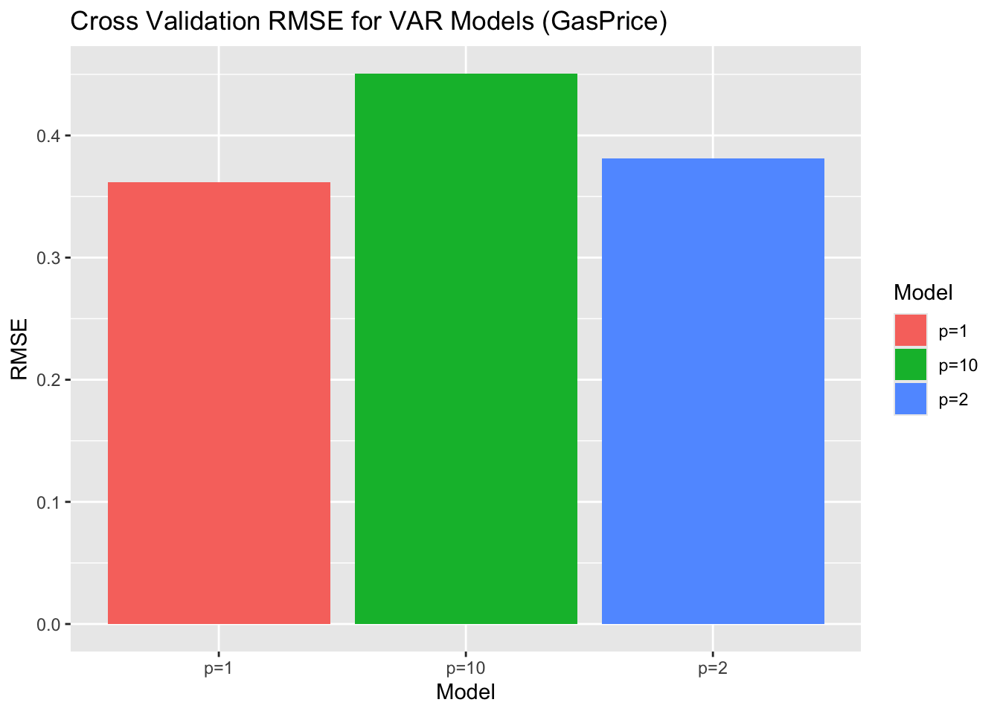
We can see from the plot, when p = 1, the RMSE is lowest, so we will say Var(1) is the best model
var_model_p1 <- VAR(ts_var2, p = 1, type = "both")
summary(var_model_p1)
VAR Estimation Results:
=========================
Endogenous variables: GasPrice, OilPrice, Consumption
Deterministic variables: both
Sample size: 285
Log Likelihood: -5239.819
Roots of the characteristic polynomial:
0.9673 0.8119 0.7116
Call:
VAR(y = ts_var2, p = 1, type = "both")
Estimation results for equation GasPrice:
=========================================
GasPrice = GasPrice.l1 + OilPrice.l1 + Consumption.l1 + const + trend
Estimate Std. Error t value Pr(>|t|)
GasPrice.l1 8.084e-01 3.466e-02 23.324 < 2e-16 ***
OilPrice.l1 7.733e-03 2.655e-03 2.913 0.00387 **
Consumption.l1 2.041e-08 1.345e-07 0.152 0.87944
const 8.666e-01 3.301e-01 2.625 0.00913 **
trend -2.340e-03 9.669e-04 -2.420 0.01616 *
---
Signif. codes: 0 '***' 0.001 '**' 0.01 '*' 0.05 '.' 0.1 ' ' 1
Residual standard error: 0.8935 on 280 degrees of freedom
Multiple R-Squared: 0.7832, Adjusted R-squared: 0.7801
F-statistic: 252.9 on 4 and 280 DF, p-value: < 2.2e-16
Estimation results for equation OilPrice:
=========================================
OilPrice = GasPrice.l1 + OilPrice.l1 + Consumption.l1 + const + trend
Estimate Std. Error t value Pr(>|t|)
GasPrice.l1 -2.592e-02 2.255e-01 -0.115 0.9086
OilPrice.l1 9.735e-01 1.727e-02 56.367 <2e-16 ***
Consumption.l1 1.555e-06 8.748e-07 1.778 0.0765 .
const -6.430e-01 2.148e+00 -0.299 0.7649
trend -5.127e-03 6.290e-03 -0.815 0.4157
---
Signif. codes: 0 '***' 0.001 '**' 0.01 '*' 0.05 '.' 0.1 ' ' 1
Residual standard error: 5.813 on 280 degrees of freedom
Multiple R-Squared: 0.9464, Adjusted R-squared: 0.9457
F-statistic: 1237 on 4 and 280 DF, p-value: < 2.2e-16
Estimation results for equation Consumption:
============================================
Consumption = GasPrice.l1 + OilPrice.l1 + Consumption.l1 + const + trend
Estimate Std. Error t value Pr(>|t|)
GasPrice.l1 -4.060e+03 1.068e+04 -0.380 0.704055
OilPrice.l1 -6.227e+02 8.178e+02 -0.761 0.447027
Consumption.l1 7.090e-01 4.143e-02 17.113 < 2e-16 ***
const 5.401e+05 1.017e+05 5.311 2.23e-07 ***
trend 1.107e+03 2.979e+02 3.718 0.000243 ***
---
Signif. codes: 0 '***' 0.001 '**' 0.01 '*' 0.05 '.' 0.1 ' ' 1
Residual standard error: 275300 on 280 degrees of freedom
Multiple R-Squared: 0.694, Adjusted R-squared: 0.6896
F-statistic: 158.7 on 4 and 280 DF, p-value: < 2.2e-16
Covariance matrix of residuals:
GasPrice OilPrice Consumption
GasPrice 7.984e-01 7.118e-01 1.403e+04
OilPrice 7.118e-01 3.379e+01 -1.731e+05
Consumption 1.403e+04 -1.731e+05 7.578e+10
Correlation matrix of residuals:
GasPrice OilPrice Consumption
GasPrice 1.00000 0.1370 0.05703
OilPrice 0.13704 1.0000 -0.10814
Consumption 0.05703 -0.1081 1.00000h <- 12
forecast_p1 <- predict(var_model_p1, n.ahead = h)
forecast_p1$fcst$GasPrice fcst lower upper CI
[1,] 4.099693 2.3483885 5.850998 1.751305
[2,] 4.112412 1.8507759 6.374048 2.261636
[3,] 4.120078 1.5705303 6.669626 2.549548
[4,] 4.124069 1.3938267 6.854311 2.730242
[5,] 4.125374 1.2745123 6.976235 2.850861
[6,] 4.124702 1.1891935 7.060211 2.935509
[7,] 4.122566 1.1247825 7.120348 2.997783
[8,] 4.119333 1.0735755 7.165090 3.045757
[9,] 4.115270 1.0309088 7.199632 3.084361
[10,] 4.110571 0.9939142 7.227228 3.116657
[11,] 4.105377 0.9608104 7.249943 3.144566
[12,] 4.099789 0.9304838 7.269094 3.169305forecast_p1$fcst$OilPrice fcst lower upper CI
[1,] 71.64207 60.24875 83.03539 11.39332
[2,] 71.43899 55.58440 87.29357 15.85458
[3,] 71.33447 52.20153 90.46740 19.13293
[4,] 71.29916 49.51551 93.08280 21.78364
[5,] 71.31220 47.29039 95.33401 24.02181
[6,] 71.35880 45.40052 97.31709 25.95828
[7,] 71.42845 43.76859 99.08830 27.65986
[8,] 71.51369 42.34264 100.68474 29.17105
[9,] 71.60927 41.08558 102.13295 30.52369
[10,] 71.71144 39.96974 103.45314 31.74170
[11,] 71.81760 38.97387 104.66132 32.84372
[12,] 71.92589 38.08119 105.77058 33.84470forecast_p1$fcst$Consumption fcst lower upper CI
[1,] 2523294 1983749 3062839 539545.0
[2,] 2586713 1925033 3248393 661679.9
[3,] 2632857 1917491 3348223 715365.9
[4,] 2666713 1925737 3407689 740976.3
[5,] 2691829 1938207 3445450 753621.2
[6,] 2710729 1950711 3470746 760017.6
[7,] 2725209 1961858 3488561 763351.4
[8,] 2736548 1971373 3501724 765175.4
[9,] 2745655 1979401 3511908 766253.6
[10,] 2753175 1986212 3520138 766962.8
[11,] 2759570 1992082 3527057 767487.7
[12,] 2765166 1997248 3533084 767918.1\[ \begin{aligned} \text{GasPrice}t &= \;0.8084\,\text{GasPrice}{t-1} \;+\;0.007733\,\text{OilPrice}{t-1} \;+\;2.041\times10^{-8}\,\text{Consumption}{t-1}\\ &\quad+\;0.8666 \;-\;0.002340\,t \;+\;\varepsilon_{1,t} \end{aligned} \]
\[ \begin{aligned} \text{OilPrice}t &= \;-0.02592\,\text{GasPrice}{t-1} \;+\;0.9735\,\text{OilPrice}{t-1} \;+\;1.555\times10^{-6}\,\text{Consumption}{t-1}\\ &\quad-\;0.6430 \;-\;0.005127\,t \;+\;\varepsilon_{2,t} \end{aligned} \]
\[ \begin{aligned} \text{Consumption}t &= \;-4060\,\text{GasPrice}{t-1} \;-\;622.7\,\text{OilPrice}{t-1} \;+\;0.7090\,\text{Consumption}{t-1}\\ &\quad+\;5.401\times10^{5} \;+\;1107\,t \;+\;\varepsilon_{3,t} \end{aligned} \]
h <- nrow(forecast_p1$fcst$GasPrice)
last_date <- max(df_var2$Date)
forecast_dates<- seq(last_date %m+% months(1),
by = "month",
length.out = h)
vars <- c("GasPrice", "OilPrice", "Consumption")
forecast_df <- map_dfr(vars, function(v) {
fc <- forecast_p1$fcst[[v]]
tibble(
Date = forecast_dates,
Variable = v,
Forecast = fc[ , "fcst"],
Lower = fc[ , "lower"],
Upper = fc[ , "upper"]
)
})
ggplot(forecast_df, aes(x = Date, y = Forecast)) +
geom_ribbon(aes(ymin = Lower, ymax = Upper),
fill = "pink",
alpha = 0.3) +
geom_line(color = "darkred", size = 1) +
facet_wrap(~ Variable, scales = "free_y", ncol = 1) +
labs(
title = "VAR(1) 12-Month Forecasts for GasPrice, OilPrice & Consumption",
x = "Date",
y = "Forecast"
) +
theme_minimal()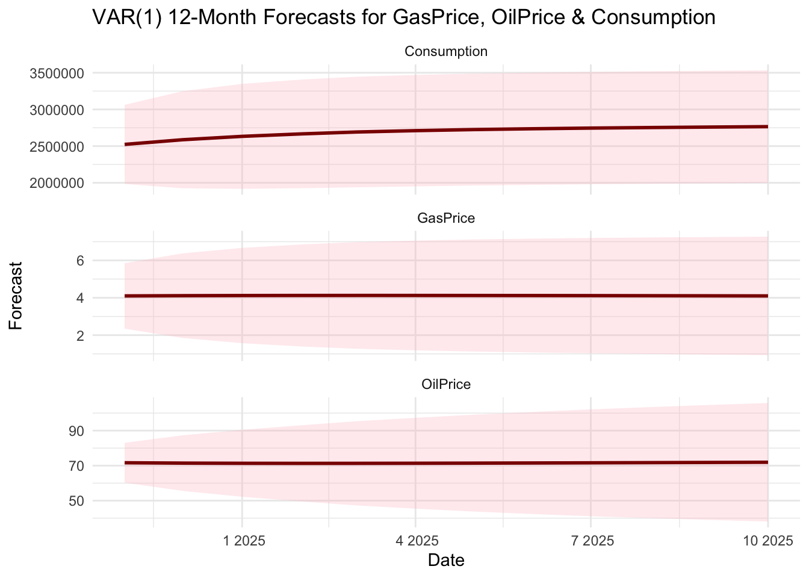
The 12-period forecast based on the VAR(1) model shows that GasPrice is expected to remain relatively stable in the coming year, with limited volatility, suggesting that the market as a whole is stabilizing, while OilPrice, although not changing much, has a significantly wider confidence interval, reflecting a high degree of uncertainty as it is more subject to external disturbances. In contrast, Consumption shows a slow upward trend, possibly reflecting the gradual increase in natural gas consumption as economic activity recovers.
To explore the dynamic relationship between U.S. natural gas electricity prices, natural gas consumption in the power sector, and natural gas exports, we selected the following three variables to construct a VAR model:
- ElecPrice: the price of natural gas delivered to the power sector in the United States;
df_elec <- read.csv("Natural_Gas_Summary.csv", skip = 6)
df_clean_elec <- df_elec[, c("Month",
"U.S..Natural.Gas.Electric.Power.Price....Mcf....Mcf",
"U.S..Natural.Gas.Deliveries.to.Electric.Power.Consumers..MMcf..MMcf",
"U.S..Natural.Gas.Exports..MMcf..MMcf")]
colnames(df_clean_elec) <- c("Date", "ElecPrice", "ElecConsumption", "Export")
df_clean_elec$Date <- parse_date_time(df_clean_elec$Date, orders = "b Y")
df_plot <- df_clean_elec %>%
pivot_longer(cols = c(ElecPrice, ElecConsumption, Export),
names_to = "Variable", values_to = "Value")
df_plot <- df_plot %>% filter(!is.na(Value))
ggplot(df_plot, aes(x = Date, y = Value, color = Variable)) +
geom_line() +
facet_wrap(~Variable, scales = "free_y") +
labs(title = "Electricity Sector: Gas Price, Consumption, and Exports")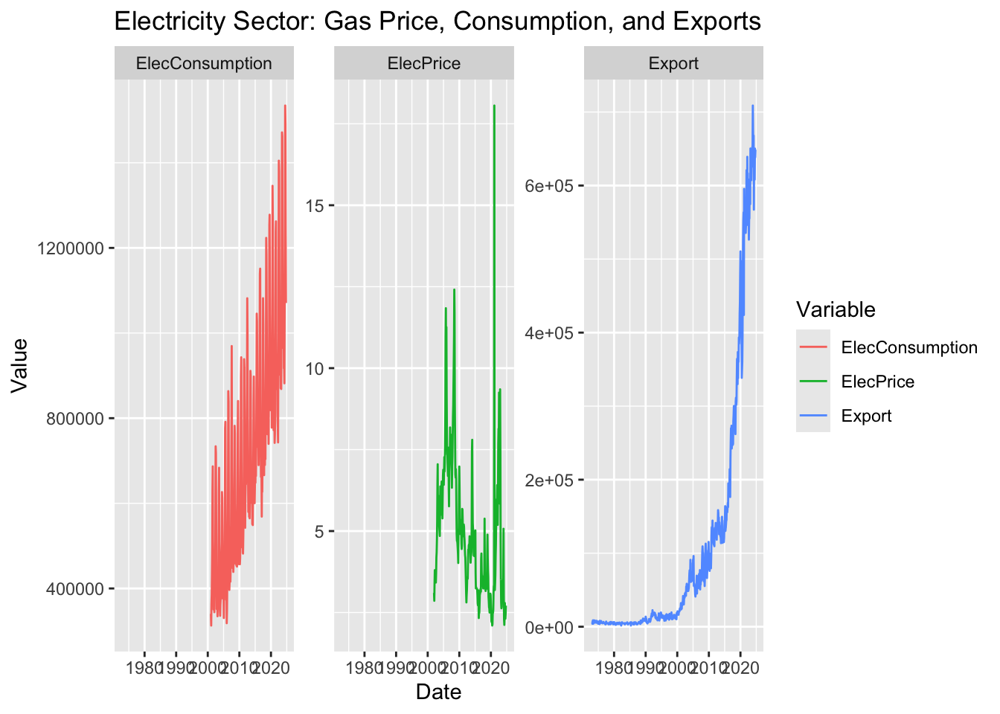
We can see from the plot - Natural gas exports have been rising since 2010 and are highly correlated with the timing of electricity price fluctuations; - Gas consumption in the power sector, while generally on an upward trend, has been subdued during periods of high electricity prices.
This provides intuitive support for the use of vector autoregressive (VAR) modeling to study the intrinsic dynamics among the three.
df_elec_var <- df_clean_elec[, c("ElecPrice", "ElecConsumption", "Export")]
df_elec_var <- na.omit(df_elec_var)
start_year <- year(df_clean_elec$Date[1])
start_month <- month(df_clean_elec$Date[1])
df_elec_ts <- ts(df_elec_var, start = c(start_year, start_month), frequency = 12)VARselect(df_elec_ts, lag.max = 10, type = "both")$selection
AIC(n) HQ(n) SC(n) FPE(n)
10 10 2 10
$criteria
1 2 3 4 5
AIC(n) 4.385412e+01 4.316023e+01 4.310074e+01 4.298381e+01 4.296065e+01
HQ(n) 4.393576e+01 4.329086e+01 4.328035e+01 4.321241e+01 4.323824e+01
SC(n) 4.405730e+01 4.348532e+01 4.354773e+01 4.355271e+01 4.365146e+01
FPE(n) 1.110730e+19 5.549754e+18 5.229687e+18 4.653311e+18 4.547858e+18
6 7 8 9 10
AIC(n) 4.287145e+01 4.275715e+01 4.264055e+01 4.263280e+01 4.247084e+01
HQ(n) 4.319802e+01 4.313271e+01 4.306509e+01 4.310633e+01 4.299336e+01
SC(n) 4.368416e+01 4.369177e+01 4.369708e+01 4.381123e+01 4.377118e+01
FPE(n) 4.161129e+18 3.713386e+18 3.306651e+18 3.283582e+18 2.795193e+18According to the results the best AIC, HQ, and FPE are all at p=10 and the best SC is at p=2 We decided that we will perform the proposed merger comparison for VAR (2), VAR (5) and VAR (10)
fit_var2 <- VAR(df_elec_ts, p = 2, type = "both")
summary(fit_var2)
VAR Estimation Results:
=========================
Endogenous variables: ElecPrice, ElecConsumption, Export
Deterministic variables: both
Sample size: 272
Log Likelihood: -7020.315
Roots of the characteristic polynomial:
0.979 0.8318 0.8014 0.8014 0.4439 0.1407
Call:
VAR(y = df_elec_ts, p = 2, type = "both")
Estimation results for equation ElecPrice:
==========================================
ElecPrice = ElecPrice.l1 + ElecConsumption.l1 + Export.l1 + ElecPrice.l2 + ElecConsumption.l2 + Export.l2 + const + trend
Estimate Std. Error t value Pr(>|t|)
ElecPrice.l1 6.311e-01 6.399e-02 9.862 < 2e-16 ***
ElecConsumption.l1 -7.306e-07 7.234e-07 -1.010 0.31348
Export.l1 1.055e-05 3.350e-06 3.150 0.00182 **
ElecPrice.l2 1.489e-01 6.498e-02 2.292 0.02271 *
ElecConsumption.l2 -1.347e-07 7.273e-07 -0.185 0.85325
Export.l2 -9.589e-06 3.333e-06 -2.877 0.00434 **
const 1.262e+00 7.699e-01 1.639 0.10251
trend 1.998e-03 2.729e-03 0.732 0.46472
---
Signif. codes: 0 '***' 0.001 '**' 0.01 '*' 0.05 '.' 0.1 ' ' 1
Residual standard error: 1.299 on 264 degrees of freedom
Multiple R-Squared: 0.6581, Adjusted R-squared: 0.6491
F-statistic: 72.6 on 7 and 264 DF, p-value: < 2.2e-16
Estimation results for equation ElecConsumption:
================================================
ElecConsumption = ElecPrice.l1 + ElecConsumption.l1 + Export.l1 + ElecPrice.l2 + ElecConsumption.l2 + Export.l2 + const + trend
Estimate Std. Error t value Pr(>|t|)
ElecPrice.l1 -1.392e+04 4.075e+03 -3.416 0.000735 ***
ElecConsumption.l1 1.166e+00 4.606e-02 25.308 < 2e-16 ***
Export.l1 -1.278e+00 2.133e-01 -5.993 6.73e-09 ***
ElecPrice.l2 8.612e+03 4.138e+03 2.081 0.038371 *
ElecConsumption.l2 -6.126e-01 4.631e-02 -13.228 < 2e-16 ***
Export.l2 1.360e+00 2.122e-01 6.407 6.77e-10 ***
const 4.488e+05 4.902e+04 9.156 < 2e-16 ***
trend -8.679e+02 1.738e+02 -4.994 1.08e-06 ***
---
Signif. codes: 0 '***' 0.001 '**' 0.01 '*' 0.05 '.' 0.1 ' ' 1
Residual standard error: 82710 on 264 degrees of freedom
Multiple R-Squared: 0.8989, Adjusted R-squared: 0.8962
F-statistic: 335.4 on 7 and 264 DF, p-value: < 2.2e-16
Estimation results for equation Export:
=======================================
Export = ElecPrice.l1 + ElecConsumption.l1 + Export.l1 + ElecPrice.l2 + ElecConsumption.l2 + Export.l2 + const + trend
Estimate Std. Error t value Pr(>|t|)
ElecPrice.l1 3.144e+03 1.173e+03 2.681 0.00781 **
ElecConsumption.l1 -2.058e-02 1.326e-02 -1.553 0.12172
Export.l1 6.326e-01 6.140e-02 10.302 < 2e-16 ***
ElecPrice.l2 -1.078e+03 1.191e+03 -0.905 0.36609
ElecConsumption.l2 3.310e-02 1.333e-02 2.483 0.01364 *
Export.l2 3.305e-01 6.109e-02 5.410 1.41e-07 ***
const -7.095e+03 1.411e+04 -0.503 0.61552
trend -5.118e+01 5.002e+01 -1.023 0.30715
---
Signif. codes: 0 '***' 0.001 '**' 0.01 '*' 0.05 '.' 0.1 ' ' 1
Residual standard error: 23810 on 264 degrees of freedom
Multiple R-Squared: 0.9857, Adjusted R-squared: 0.9853
F-statistic: 2594 on 7 and 264 DF, p-value: < 2.2e-16
Covariance matrix of residuals:
ElecPrice ElecConsumption Export
ElecPrice 1.687 8.283e+03 -10014
ElecConsumption 8282.955 6.841e+09 156325747
Export -10014.139 1.563e+08 566804084
Correlation matrix of residuals:
ElecPrice ElecConsumption Export
ElecPrice 1.00000 0.07709 -0.32380
ElecConsumption 0.07709 1.00000 0.07939
Export -0.32380 0.07939 1.00000fit_var5 <- VAR(df_elec_ts, p = 5, type = "both")
summary(fit_var5)
VAR Estimation Results:
=========================
Endogenous variables: ElecPrice, ElecConsumption, Export
Deterministic variables: both
Sample size: 269
Log Likelihood: -6883.049
Roots of the characteristic polynomial:
0.9875 0.915 0.9007 0.9007 0.812 0.812 0.7033 0.7033 0.647 0.6326 0.6326 0.4871 0.4871 0.4231 0.4231
Call:
VAR(y = df_elec_ts, p = 5, type = "both")
Estimation results for equation ElecPrice:
==========================================
ElecPrice = ElecPrice.l1 + ElecConsumption.l1 + Export.l1 + ElecPrice.l2 + ElecConsumption.l2 + Export.l2 + ElecPrice.l3 + ElecConsumption.l3 + Export.l3 + ElecPrice.l4 + ElecConsumption.l4 + Export.l4 + ElecPrice.l5 + ElecConsumption.l5 + Export.l5 + const + trend
Estimate Std. Error t value Pr(>|t|)
ElecPrice.l1 6.134e-01 6.692e-02 9.166 < 2e-16 ***
ElecConsumption.l1 -1.974e-06 1.065e-06 -1.855 0.06480 .
Export.l1 1.166e-05 3.681e-06 3.168 0.00172 **
ElecPrice.l2 1.523e-02 8.240e-02 0.185 0.85348
ElecConsumption.l2 3.368e-06 1.468e-06 2.294 0.02259 *
Export.l2 -1.237e-05 4.705e-06 -2.630 0.00906 **
ElecPrice.l3 1.706e-01 8.038e-02 2.123 0.03475 *
ElecConsumption.l3 -4.419e-06 1.536e-06 -2.877 0.00436 **
Export.l3 2.836e-06 4.900e-06 0.579 0.56317
ElecPrice.l4 -4.957e-02 8.144e-02 -0.609 0.54327
ElecConsumption.l4 2.054e-06 1.464e-06 1.404 0.16166
Export.l4 -8.279e-06 4.720e-06 -1.754 0.08064 .
ElecPrice.l5 1.017e-01 6.959e-02 1.462 0.14495
ElecConsumption.l5 4.518e-07 9.980e-07 0.453 0.65117
Export.l5 6.568e-06 3.928e-06 1.672 0.09574 .
const 9.305e-01 1.165e+00 0.799 0.42512
trend 7.631e-04 3.244e-03 0.235 0.81422
---
Signif. codes: 0 '***' 0.001 '**' 0.01 '*' 0.05 '.' 0.1 ' ' 1
Residual standard error: 1.276 on 252 degrees of freedom
Multiple R-Squared: 0.6804, Adjusted R-squared: 0.6601
F-statistic: 33.53 on 16 and 252 DF, p-value: < 2.2e-16
Estimation results for equation ElecConsumption:
================================================
ElecConsumption = ElecPrice.l1 + ElecConsumption.l1 + Export.l1 + ElecPrice.l2 + ElecConsumption.l2 + Export.l2 + ElecPrice.l3 + ElecConsumption.l3 + Export.l3 + ElecPrice.l4 + ElecConsumption.l4 + Export.l4 + ElecPrice.l5 + ElecConsumption.l5 + Export.l5 + const + trend
Estimate Std. Error t value Pr(>|t|)
ElecPrice.l1 -1.149e+04 3.965e+03 -2.898 0.004091 **
ElecConsumption.l1 1.007e+00 6.307e-02 15.967 < 2e-16 ***
Export.l1 -1.288e+00 2.181e-01 -5.908 1.12e-08 ***
ElecPrice.l2 -2.798e+02 4.882e+03 -0.057 0.954349
ElecConsumption.l2 -4.371e-01 8.698e-02 -5.026 9.52e-07 ***
Export.l2 4.273e-01 2.788e-01 1.533 0.126600
ElecPrice.l3 -8.311e+03 4.762e+03 -1.745 0.082194 .
ElecConsumption.l3 -1.555e-01 9.101e-02 -1.708 0.088831 .
Export.l3 2.713e-02 2.903e-01 0.093 0.925613
ElecPrice.l4 1.860e+04 4.825e+03 3.854 0.000147 ***
ElecConsumption.l4 9.799e-02 8.672e-02 1.130 0.259571
Export.l4 6.587e-01 2.797e-01 2.355 0.019272 *
ElecPrice.l5 -6.028e+02 4.123e+03 -0.146 0.883881
ElecConsumption.l5 -5.472e-02 5.913e-02 -0.925 0.355619
Export.l5 2.828e-01 2.327e-01 1.215 0.225478
const 5.147e+05 6.901e+04 7.458 1.42e-12 ***
trend -1.043e+03 1.922e+02 -5.424 1.36e-07 ***
---
Signif. codes: 0 '***' 0.001 '**' 0.01 '*' 0.05 '.' 0.1 ' ' 1
Residual standard error: 75630 on 252 degrees of freedom
Multiple R-Squared: 0.9117, Adjusted R-squared: 0.9061
F-statistic: 162.7 on 16 and 252 DF, p-value: < 2.2e-16
Estimation results for equation Export:
=======================================
Export = ElecPrice.l1 + ElecConsumption.l1 + Export.l1 + ElecPrice.l2 + ElecConsumption.l2 + Export.l2 + ElecPrice.l3 + ElecConsumption.l3 + Export.l3 + ElecPrice.l4 + ElecConsumption.l4 + Export.l4 + ElecPrice.l5 + ElecConsumption.l5 + Export.l5 + const + trend
Estimate Std. Error t value Pr(>|t|)
ElecPrice.l1 2.813e+03 1.199e+03 2.346 0.019767 *
ElecConsumption.l1 1.035e-02 1.908e-02 0.542 0.588000
Export.l1 5.421e-01 6.595e-02 8.219 1.09e-14 ***
ElecPrice.l2 2.084e+03 1.477e+03 1.412 0.159321
ElecConsumption.l2 6.517e-03 2.631e-02 0.248 0.804554
Export.l2 4.263e-01 8.431e-02 5.056 8.22e-07 ***
ElecPrice.l3 -1.614e+03 1.440e+03 -1.121 0.263500
ElecConsumption.l3 1.527e-02 2.752e-02 0.555 0.579451
Export.l3 -7.938e-02 8.780e-02 -0.904 0.366765
ElecPrice.l4 2.274e+02 1.459e+03 0.156 0.876315
ElecConsumption.l4 -6.572e-03 2.623e-02 -0.251 0.802339
Export.l4 -9.987e-03 8.458e-02 -0.118 0.906105
ElecPrice.l5 -1.231e+03 1.247e+03 -0.987 0.324418
ElecConsumption.l5 4.970e-02 1.788e-02 2.779 0.005863 **
Export.l5 7.611e-02 7.038e-02 1.081 0.280572
const -7.321e+04 2.087e+04 -3.508 0.000535 ***
trend 9.518e+01 5.813e+01 1.637 0.102798
---
Signif. codes: 0 '***' 0.001 '**' 0.01 '*' 0.05 '.' 0.1 ' ' 1
Residual standard error: 22870 on 252 degrees of freedom
Multiple R-Squared: 0.9867, Adjusted R-squared: 0.9859
F-statistic: 1172 on 16 and 252 DF, p-value: < 2.2e-16
Covariance matrix of residuals:
ElecPrice ElecConsumption Export
ElecPrice 1.629 7.508e+03 -10725
ElecConsumption 7508.406 5.719e+09 188889163
Export -10724.759 1.889e+08 523146110
Correlation matrix of residuals:
ElecPrice ElecConsumption Export
ElecPrice 1.00000 0.07778 -0.3673
ElecConsumption 0.07778 1.00000 0.1092
Export -0.36735 0.10920 1.0000fit_var10 <- VAR(df_elec_ts, p = 10, type = "both")
summary(fit_var10)
VAR Estimation Results:
=========================
Endogenous variables: ElecPrice, ElecConsumption, Export
Deterministic variables: both
Sample size: 264
Log Likelihood: -6633.95
Roots of the characteristic polynomial:
0.9878 0.984 0.984 0.9731 0.9731 0.9348 0.9348 0.9051 0.9051 0.8778 0.8766 0.876 0.876 0.8431 0.8431 0.828 0.828 0.8192 0.8174 0.8174 0.8147 0.8147 0.7998 0.7998 0.7223 0.7223 0.6672 0.6672 0.6343 0.6343
Call:
VAR(y = df_elec_ts, p = 10, type = "both")
Estimation results for equation ElecPrice:
==========================================
ElecPrice = ElecPrice.l1 + ElecConsumption.l1 + Export.l1 + ElecPrice.l2 + ElecConsumption.l2 + Export.l2 + ElecPrice.l3 + ElecConsumption.l3 + Export.l3 + ElecPrice.l4 + ElecConsumption.l4 + Export.l4 + ElecPrice.l5 + ElecConsumption.l5 + Export.l5 + ElecPrice.l6 + ElecConsumption.l6 + Export.l6 + ElecPrice.l7 + ElecConsumption.l7 + Export.l7 + ElecPrice.l8 + ElecConsumption.l8 + Export.l8 + ElecPrice.l9 + ElecConsumption.l9 + Export.l9 + ElecPrice.l10 + ElecConsumption.l10 + Export.l10 + const + trend
Estimate Std. Error t value Pr(>|t|)
ElecPrice.l1 6.659e-01 7.170e-02 9.286 < 2e-16 ***
ElecConsumption.l1 -2.952e-06 1.236e-06 -2.389 0.01772 *
Export.l1 1.502e-05 4.603e-06 3.263 0.00127 **
ElecPrice.l2 -4.135e-02 8.683e-02 -0.476 0.63436
ElecConsumption.l2 3.890e-06 1.695e-06 2.294 0.02268 *
Export.l2 -1.587e-05 5.520e-06 -2.876 0.00441 **
ElecPrice.l3 2.391e-01 8.728e-02 2.739 0.00664 **
ElecConsumption.l3 -4.981e-06 1.725e-06 -2.888 0.00425 **
Export.l3 3.351e-06 5.683e-06 0.590 0.55596
ElecPrice.l4 -1.421e-01 8.867e-02 -1.603 0.11025
ElecConsumption.l4 4.457e-06 1.759e-06 2.534 0.01194 *
Export.l4 -1.036e-05 5.216e-06 -1.987 0.04808 *
ElecPrice.l5 1.303e-01 9.024e-02 1.444 0.15004
ElecConsumption.l5 -3.534e-06 1.727e-06 -2.046 0.04188 *
Export.l5 9.160e-06 5.265e-06 1.740 0.08322 .
ElecPrice.l6 -4.335e-02 9.015e-02 -0.481 0.63102
ElecConsumption.l6 3.921e-06 1.683e-06 2.330 0.02066 *
Export.l6 -5.071e-07 5.263e-06 -0.096 0.92332
ElecPrice.l7 1.566e-01 8.996e-02 1.740 0.08311 .
ElecConsumption.l7 -2.755e-06 1.687e-06 -1.633 0.10375
Export.l7 7.978e-06 5.355e-06 1.490 0.13768
ElecPrice.l8 -8.285e-02 8.609e-02 -0.962 0.33686
ElecConsumption.l8 1.381e-06 1.721e-06 0.802 0.42314
Export.l8 -7.904e-06 5.340e-06 -1.480 0.14017
ElecPrice.l9 -5.627e-02 8.630e-02 -0.652 0.51500
ElecConsumption.l9 -1.998e-06 1.664e-06 -1.201 0.23110
Export.l9 -7.929e-06 5.173e-06 -1.533 0.12669
ElecPrice.l10 9.157e-03 7.337e-02 0.125 0.90079
ElecConsumption.l10 1.174e-06 1.222e-06 0.961 0.33751
Export.l10 7.889e-06 4.285e-06 1.841 0.06690 .
const 1.724e+00 2.495e+00 0.691 0.49016
trend -3.833e-04 5.427e-03 -0.071 0.94375
---
Signif. codes: 0 '***' 0.001 '**' 0.01 '*' 0.05 '.' 0.1 ' ' 1
Residual standard error: 1.27 on 232 degrees of freedom
Multiple R-Squared: 0.7021, Adjusted R-squared: 0.6623
F-statistic: 17.64 on 31 and 232 DF, p-value: < 2.2e-16
Estimation results for equation ElecConsumption:
================================================
ElecConsumption = ElecPrice.l1 + ElecConsumption.l1 + Export.l1 + ElecPrice.l2 + ElecConsumption.l2 + Export.l2 + ElecPrice.l3 + ElecConsumption.l3 + Export.l3 + ElecPrice.l4 + ElecConsumption.l4 + Export.l4 + ElecPrice.l5 + ElecConsumption.l5 + Export.l5 + ElecPrice.l6 + ElecConsumption.l6 + Export.l6 + ElecPrice.l7 + ElecConsumption.l7 + Export.l7 + ElecPrice.l8 + ElecConsumption.l8 + Export.l8 + ElecPrice.l9 + ElecConsumption.l9 + Export.l9 + ElecPrice.l10 + ElecConsumption.l10 + Export.l10 + const + trend
Estimate Std. Error t value Pr(>|t|)
ElecPrice.l1 -1.564e+03 3.484e+03 -0.449 0.654008
ElecConsumption.l1 8.794e-01 6.006e-02 14.641 < 2e-16 ***
Export.l1 -4.324e-01 2.237e-01 -1.933 0.054417 .
ElecPrice.l2 -2.253e+03 4.219e+03 -0.534 0.593825
ElecConsumption.l2 -2.271e-01 8.239e-02 -2.756 0.006309 **
Export.l2 2.071e-01 2.682e-01 0.772 0.440819
ElecPrice.l3 -1.183e+04 4.241e+03 -2.788 0.005737 **
ElecConsumption.l3 -2.205e-01 8.382e-02 -2.631 0.009095 **
Export.l3 -4.842e-01 2.762e-01 -1.754 0.080835 .
ElecPrice.l4 1.372e+04 4.309e+03 3.185 0.001647 **
ElecConsumption.l4 9.059e-02 8.548e-02 1.060 0.290333
Export.l4 9.329e-01 2.535e-01 3.681 0.000289 ***
ElecPrice.l5 1.967e+03 4.385e+03 0.449 0.654197
ElecConsumption.l5 -3.267e-02 8.393e-02 -0.389 0.697444
Export.l5 4.400e-01 2.559e-01 1.720 0.086816 .
ElecPrice.l6 -3.011e+03 4.381e+03 -0.687 0.492579
ElecConsumption.l6 -1.208e-01 8.177e-02 -1.477 0.141079
Export.l6 -9.856e-01 2.557e-01 -3.854 0.000151 ***
ElecPrice.l7 5.580e+03 4.372e+03 1.276 0.203114
ElecConsumption.l7 1.294e-01 8.198e-02 1.578 0.115819
Export.l7 4.936e-01 2.602e-01 1.897 0.059108 .
ElecPrice.l8 -1.394e+04 4.184e+03 -3.331 0.001005 **
ElecConsumption.l8 -1.110e-01 8.362e-02 -1.328 0.185620
Export.l8 4.695e-02 2.595e-01 0.181 0.856583
ElecPrice.l9 -1.929e+02 4.194e+03 -0.046 0.963358
ElecConsumption.l9 -2.774e-01 8.085e-02 -3.431 0.000711 ***
Export.l9 -1.816e-01 2.514e-01 -0.723 0.470663
ElecPrice.l10 7.590e+03 3.565e+03 2.129 0.034330 *
ElecConsumption.l10 3.916e-01 5.936e-02 6.598 2.8e-10 ***
Export.l10 7.472e-02 2.082e-01 0.359 0.720045
const 4.763e+05 1.212e+05 3.928 0.000113 ***
trend -9.154e+02 2.637e+02 -3.471 0.000618 ***
---
Signif. codes: 0 '***' 0.001 '**' 0.01 '*' 0.05 '.' 0.1 ' ' 1
Residual standard error: 61730 on 232 degrees of freedom
Multiple R-Squared: 0.9445, Adjusted R-squared: 0.9371
F-statistic: 127.3 on 31 and 232 DF, p-value: < 2.2e-16
Estimation results for equation Export:
=======================================
Export = ElecPrice.l1 + ElecConsumption.l1 + Export.l1 + ElecPrice.l2 + ElecConsumption.l2 + Export.l2 + ElecPrice.l3 + ElecConsumption.l3 + Export.l3 + ElecPrice.l4 + ElecConsumption.l4 + Export.l4 + ElecPrice.l5 + ElecConsumption.l5 + Export.l5 + ElecPrice.l6 + ElecConsumption.l6 + Export.l6 + ElecPrice.l7 + ElecConsumption.l7 + Export.l7 + ElecPrice.l8 + ElecConsumption.l8 + Export.l8 + ElecPrice.l9 + ElecConsumption.l9 + Export.l9 + ElecPrice.l10 + ElecConsumption.l10 + Export.l10 + const + trend
Estimate Std. Error t value Pr(>|t|)
ElecPrice.l1 1.710e+03 1.128e+03 1.516 0.13085
ElecConsumption.l1 3.103e-02 1.944e-02 1.596 0.11178
Export.l1 5.382e-01 7.239e-02 7.434 2.02e-12 ***
ElecPrice.l2 2.754e+03 1.366e+03 2.017 0.04489 *
ElecConsumption.l2 -2.360e-02 2.667e-02 -0.885 0.37700
Export.l2 4.646e-01 8.681e-02 5.351 2.09e-07 ***
ElecPrice.l3 -1.802e+03 1.373e+03 -1.313 0.19060
ElecConsumption.l3 7.380e-03 2.713e-02 0.272 0.78585
Export.l3 -1.577e-01 8.938e-02 -1.765 0.07894 .
ElecPrice.l4 2.490e+03 1.394e+03 1.785 0.07549 .
ElecConsumption.l4 1.727e-02 2.766e-02 0.624 0.53303
Export.l4 1.169e-01 8.203e-02 1.426 0.15535
ElecPrice.l5 -2.513e+03 1.419e+03 -1.771 0.07787 .
ElecConsumption.l5 2.918e-02 2.716e-02 1.074 0.28389
Export.l5 -1.549e-03 8.281e-02 -0.019 0.98509
ElecPrice.l6 -2.782e+03 1.418e+03 -1.963 0.05089 .
ElecConsumption.l6 -8.453e-02 2.647e-02 -3.194 0.00160 **
Export.l6 -2.279e-01 8.278e-02 -2.753 0.00637 **
ElecPrice.l7 -1.321e+02 1.415e+03 -0.093 0.92568
ElecConsumption.l7 1.271e-01 2.653e-02 4.792 2.95e-06 ***
Export.l7 3.990e-02 8.423e-02 0.474 0.63618
ElecPrice.l8 8.073e+02 1.354e+03 0.596 0.55159
ElecConsumption.l8 -4.778e-02 2.706e-02 -1.765 0.07882 .
Export.l8 2.380e-01 8.398e-02 2.834 0.00500 **
ElecPrice.l9 7.922e+02 1.357e+03 0.584 0.56003
ElecConsumption.l9 -4.077e-02 2.617e-02 -1.558 0.12059
Export.l9 -7.836e-02 8.136e-02 -0.963 0.33648
ElecPrice.l10 1.569e+03 1.154e+03 1.360 0.17514
ElecConsumption.l10 1.377e-02 1.921e-02 0.717 0.47418
Export.l10 2.902e-02 6.739e-02 0.431 0.66713
const -3.019e+04 3.924e+04 -0.769 0.44240
trend -8.769e+00 8.535e+01 -0.103 0.91826
---
Signif. codes: 0 '***' 0.001 '**' 0.01 '*' 0.05 '.' 0.1 ' ' 1
Residual standard error: 19980 on 232 degrees of freedom
Multiple R-Squared: 0.9897, Adjusted R-squared: 0.9884
F-statistic: 722.5 on 31 and 232 DF, p-value: < 2.2e-16
Covariance matrix of residuals:
ElecPrice ElecConsumption Export
ElecPrice 1.614 5.011e+03 -10702
ElecConsumption 5011.446 3.811e+09 97146018
Export -10702.496 9.715e+07 399199781
Correlation matrix of residuals:
ElecPrice ElecConsumption Export
ElecPrice 1.0000 0.06390 -0.42165
ElecConsumption 0.0639 1.00000 0.07876
Export -0.4216 0.07876 1.00000We fit three models, VAR(2), VAR(5) and VAR(10), respectively, where VAR(2) is more concise in terms of model structure, VAR(5) possesses strong explanatory power in multiple equations, and VAR(10) achieves lower values on some information criteria, but also suffers from higher complexity and low significance of coefficients.
cv_rmse_var_monthly <- function(ts_data, p, h = 3, initial = 180) {
n <- nrow(ts_data)
actuals <- c()
preds <- c()
for (i in seq(initial, n - h)) {
train_data <- ts_data[1:i, ]
test_data <- ts_data[(i + 1):(i + h), "ElecPrice"]
fit <- VAR(train_data, p = p, type = "const")
fcast <- predict(fit, n.ahead = h)
pred <- fcast$fcst$ElecPrice[1:h, "fcst"]
actuals <- c(actuals, test_data)
preds <- c(preds, pred)
}
rmse <- sqrt(mean((actuals - preds)^2, na.rm = TRUE))
return(rmse)
}rmse_var2 <- cv_rmse_var_monthly(df_elec_ts, p = 2, h = 3, initial = 180)
rmse_var5 <- cv_rmse_var_monthly(df_elec_ts, p = 5, h = 3, initial = 180)
rmse_var10 <- cv_rmse_var_monthly(df_elec_ts, p = 10, h = 3, initial = 180)
cat("RMSE for VAR(2): ", round(rmse_var2, 4), "\n")RMSE for VAR(2): 1.481 cat("RMSE for VAR(5): ", round(rmse_var5, 4), "\n")RMSE for VAR(5): 1.4359 cat("RMSE for VAR(10):", round(rmse_var10, 4), "\n")RMSE for VAR(10): 1.5514 df_rmse <- data.frame(
Model = c("VAR(2)", "VAR(5)", "VAR(10)"),
RMSE = c(rmse_var2, rmse_var5, rmse_var10)
)
ggplot(df_rmse, aes(x = Model, y = RMSE, fill = Model)) +
geom_col(width = 0.6) +
labs(title = "RMSE Comparison of VAR Models (3-Month Forecast)",
y = "RMSE (ElecPrice)",
x = "VAR Model (p)")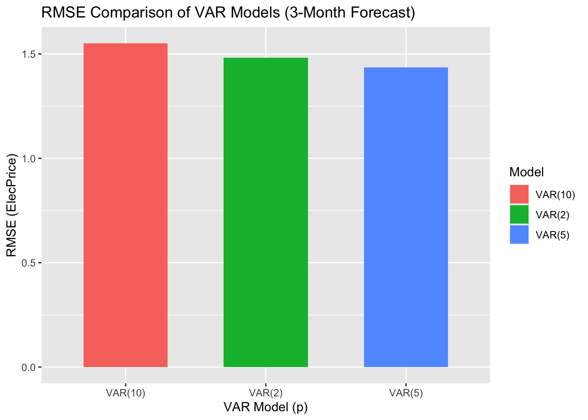
According to the results of RMSE comparison shows that VAR (5) is the best model, so we choose VAR (5) as the final model, and we will use VAR (5) for prediction below
fit_var_best <- VAR(df_elec_ts, p = 5, type = "const")
summary(fit_var_best)
VAR Estimation Results:
=========================
Endogenous variables: ElecPrice, ElecConsumption, Export
Deterministic variables: const
Sample size: 269
Log Likelihood: -6901.531
Roots of the characteristic polynomial:
0.9924 0.9227 0.8574 0.8574 0.8185 0.8185 0.7008 0.7008 0.669 0.669 0.6178 0.4912 0.4912 0.3031 0.3031
Call:
VAR(y = df_elec_ts, p = 5, type = "const")
Estimation results for equation ElecPrice:
==========================================
ElecPrice = ElecPrice.l1 + ElecConsumption.l1 + Export.l1 + ElecPrice.l2 + ElecConsumption.l2 + Export.l2 + ElecPrice.l3 + ElecConsumption.l3 + Export.l3 + ElecPrice.l4 + ElecConsumption.l4 + Export.l4 + ElecPrice.l5 + ElecConsumption.l5 + Export.l5 + const
Estimate Std. Error t value Pr(>|t|)
ElecPrice.l1 6.149e-01 6.648e-02 9.249 < 2e-16 ***
ElecConsumption.l1 -2.063e-06 9.940e-07 -2.076 0.03895 *
Export.l1 1.176e-05 3.652e-06 3.219 0.00145 **
ElecPrice.l2 1.339e-02 8.188e-02 0.164 0.87020
ElecConsumption.l2 3.392e-06 1.462e-06 2.321 0.02110 *
Export.l2 -1.254e-05 4.643e-06 -2.701 0.00737 **
ElecPrice.l3 1.703e-01 8.022e-02 2.123 0.03472 *
ElecConsumption.l3 -4.448e-06 1.528e-06 -2.911 0.00392 **
Export.l3 2.725e-06 4.868e-06 0.560 0.57611
ElecPrice.l4 -5.071e-02 8.115e-02 -0.625 0.53263
ElecConsumption.l4 2.064e-06 1.460e-06 1.413 0.15882
Export.l4 -8.380e-06 4.692e-06 -1.786 0.07528 .
ElecPrice.l5 1.060e-01 6.702e-02 1.582 0.11485
ElecConsumption.l5 3.866e-07 9.570e-07 0.404 0.68656
Export.l5 6.728e-06 3.861e-06 1.743 0.08261 .
const 1.161e+00 6.275e-01 1.851 0.06539 .
---
Signif. codes: 0 '***' 0.001 '**' 0.01 '*' 0.05 '.' 0.1 ' ' 1
Residual standard error: 1.274 on 253 degrees of freedom
Multiple R-Squared: 0.6803, Adjusted R-squared: 0.6614
F-statistic: 35.9 on 15 and 253 DF, p-value: < 2.2e-16
Estimation results for equation ElecConsumption:
================================================
ElecConsumption = ElecPrice.l1 + ElecConsumption.l1 + Export.l1 + ElecPrice.l2 + ElecConsumption.l2 + Export.l2 + ElecPrice.l3 + ElecConsumption.l3 + Export.l3 + ElecPrice.l4 + ElecConsumption.l4 + Export.l4 + ElecPrice.l5 + ElecConsumption.l5 + Export.l5 + const
Estimate Std. Error t value Pr(>|t|)
ElecPrice.l1 -1.355e+04 4.162e+03 -3.255 0.00129 **
ElecConsumption.l1 1.128e+00 6.223e-02 18.128 < 2e-16 ***
Export.l1 -1.417e+00 2.286e-01 -6.196 2.33e-09 ***
ElecPrice.l2 2.236e+03 5.126e+03 0.436 0.66310
ElecConsumption.l2 -4.698e-01 9.152e-02 -5.134 5.67e-07 ***
Export.l2 6.548e-01 2.907e-01 2.253 0.02512 *
ElecPrice.l3 -7.869e+03 5.022e+03 -1.567 0.11842
ElecConsumption.l3 -1.152e-01 9.566e-02 -1.204 0.22964
Export.l3 1.797e-01 3.047e-01 0.590 0.55593
ElecPrice.l4 2.015e+04 5.080e+03 3.965 9.55e-05 ***
ElecConsumption.l4 8.516e-02 9.142e-02 0.931 0.35249
Export.l4 7.965e-01 2.937e-01 2.712 0.00716 **
ElecPrice.l5 -6.472e+03 4.196e+03 -1.543 0.12418
ElecConsumption.l5 3.428e-02 5.992e-02 0.572 0.56769
Export.l5 6.364e-02 2.417e-01 0.263 0.79254
const 1.995e+05 3.928e+04 5.079 7.36e-07 ***
---
Signif. codes: 0 '***' 0.001 '**' 0.01 '*' 0.05 '.' 0.1 ' ' 1
Residual standard error: 79760 on 253 degrees of freedom
Multiple R-Squared: 0.9014, Adjusted R-squared: 0.8956
F-statistic: 154.3 on 15 and 253 DF, p-value: < 2.2e-16
Estimation results for equation Export:
=======================================
Export = ElecPrice.l1 + ElecConsumption.l1 + Export.l1 + ElecPrice.l2 + ElecConsumption.l2 + Export.l2 + ElecPrice.l3 + ElecConsumption.l3 + Export.l3 + ElecPrice.l4 + ElecConsumption.l4 + Export.l4 + ElecPrice.l5 + ElecConsumption.l5 + Export.l5 + const
Estimate Std. Error t value Pr(>|t|)
ElecPrice.l1 3.001e+03 1.197e+03 2.506 0.012845 *
ElecConsumption.l1 -6.944e-04 1.790e-02 -0.039 0.969091
Export.l1 5.538e-01 6.578e-02 8.418 2.86e-15 ***
ElecPrice.l2 1.855e+03 1.475e+03 1.258 0.209716
ElecConsumption.l2 9.501e-03 2.633e-02 0.361 0.718516
Export.l2 4.055e-01 8.362e-02 4.849 2.16e-06 ***
ElecPrice.l3 -1.655e+03 1.445e+03 -1.145 0.253267
ElecConsumption.l3 1.160e-02 2.752e-02 0.421 0.673835
Export.l3 -9.331e-02 8.767e-02 -1.064 0.288205
ElecPrice.l4 8.622e+01 1.462e+03 0.059 0.953009
ElecConsumption.l4 -5.401e-03 2.630e-02 -0.205 0.837472
Export.l4 -2.256e-02 8.451e-02 -0.267 0.789698
ElecPrice.l5 -6.953e+02 1.207e+03 -0.576 0.565158
ElecConsumption.l5 4.157e-02 1.724e-02 2.412 0.016592 *
Export.l5 9.611e-02 6.954e-02 1.382 0.168177
const -4.444e+04 1.130e+04 -3.932 0.000109 ***
---
Signif. codes: 0 '***' 0.001 '**' 0.01 '*' 0.05 '.' 0.1 ' ' 1
Residual standard error: 22950 on 253 degrees of freedom
Multiple R-Squared: 0.9866, Adjusted R-squared: 0.9858
F-statistic: 1242 on 15 and 253 DF, p-value: < 2.2e-16
Covariance matrix of residuals:
ElecPrice ElecConsumption Export
ElecPrice 1.623 6.992e+03 -10638
ElecConsumption 6991.865 6.362e+09 127416467
Export -10637.922 1.274e+08 526622093
Correlation matrix of residuals:
ElecPrice ElecConsumption Export
ElecPrice 1.0000 0.06880 -0.36385
ElecConsumption 0.0688 1.00000 0.06961
Export -0.3638 0.06961 1.00000Equation
\[ \begin{aligned} \mathrm{ElecPrice}t &=\,0.6149\,\mathrm{ElecPrice}{t-1} \;-\;2.063\times10^{-6}\,\mathrm{ElecConsumption}{t-1} \;+\;1.176\times10^{-5}\,\mathrm{Export}{t-1}\\ &\quad+\;0.01339\,\mathrm{ElecPrice}{t-2} \;+\;3.392\times10^{-6}\,\mathrm{ElecConsumption}{t-2} \;-\;1.254\times10^{-5}\,\mathrm{Export}{t-2}\\ &\quad+\;0.1703\,\mathrm{ElecPrice}{t-3} \;-\;4.448\times10^{-6}\,\mathrm{ElecConsumption}{t-3} \;+\;2.725\times10^{-6}\,\mathrm{Export}{t-3}\\ &\quad-\;0.05071\,\mathrm{ElecPrice}{t-4} \;+\;2.064\times10^{-6}\,\mathrm{ElecConsumption}{t-4} \;-\;8.380\times10^{-6}\,\mathrm{Export}{t-4}\\ &\quad+\;0.1060\,\mathrm{ElecPrice}{t-5} \;+\;3.866\times10^{-7}\,\mathrm{ElecConsumption}{t-5} \;+\;6.728\times10^{-6}\,\mathrm{Export}{t-5}\\ &\quad+\;1.161\;+\;\varepsilon_{1,t}\,. \end{aligned} \]
\[ \begin{aligned} \mathrm{ElecConsumption}t &=\,-1.355\times10^{4}\,\mathrm{ElecPrice}{t-1} \;+\;1.128\,\mathrm{ElecConsumption}{t-1} \;-\;1.417\,\mathrm{Export}{t-1}\\ &\quad+\;2236\,\mathrm{ElecPrice}{t-2} \;-\;0.4698\,\mathrm{ElecConsumption}{t-2} \;+\;0.6548\,\mathrm{Export}{t-2}\\ &\quad-\;7869\,\mathrm{ElecPrice}{t-3} \;-\;0.1152\,\mathrm{ElecConsumption}{t-3} \;+\;0.1797\,\mathrm{Export}{t-3}\\ &\quad+\;20150\,\mathrm{ElecPrice}{t-4} \;+\;0.08516\,\mathrm{ElecConsumption}{t-4} \;+\;0.7965\,\mathrm{Export}{t-4}\\ &\quad-\;6472\,\mathrm{ElecPrice}{t-5} \;+\;0.03428\,\mathrm{ElecConsumption}{t-5} \;+\;0.06364\,\mathrm{Export}{t-5}\\ &\quad+\;1.995\times10^{5}\;+\;\varepsilon_{2,t}\,. \end{aligned} \]
\[ \begin{aligned} \mathrm{Export}t &=\;3001\,\mathrm{ElecPrice}{t-1} \;+\;0.0006944\,\mathrm{ElecConsumption}{t-1} \;+\;0.5538\,\mathrm{Export}{t-1}\\ &\quad+\;1855\,\mathrm{ElecPrice}{t-2} \;+\;0.009501\,\mathrm{ElecConsumption}{t-2} \;+\;0.4055\,\mathrm{Export}{t-2}\\ &\quad-\;1655\,\mathrm{ElecPrice}{t-3} \;+\;0.01160\,\mathrm{ElecConsumption}{t-3} \;-\;0.09331\,\mathrm{Export}{t-3}\\ &\quad+\;86.22\,\mathrm{ElecPrice}{t-4} \;-\;0.005401\,\mathrm{ElecConsumption}{t-4} \;-\;0.02256\,\mathrm{Export}{t-4}\\ &\quad-\;695.3\,\mathrm{ElecPrice}{t-5} \;+\;0.04157\,\mathrm{ElecConsumption}{t-5} \;+\;0.09611\,\mathrm{Export}{t-5}\\ &\quad-\;44440\;+\;\varepsilon_{3,t}\,. \end{aligned} \]
fcast <- predict(fit_var_best, n.ahead = 12)
fcast_elec <- fcast$fcst$ElecPrice
fcast_mean <- fcast_elec[, "fcst"]
start_forecast <- time(df_elec_ts)[length(df_elec_ts[,1])] + 1/12
fcast_ts <- ts(fcast_mean, start = start_forecast, frequency = 12)
elec_hist <- df_elec_ts[, "ElecPrice"]
elec_combined <- ts(
c(elec_hist, fcast_ts),
start = start(elec_hist),
frequency = 12
)
autoplot(elec_combined, series = "ElecPrice") +
autolayer(fcast_ts, series = "Forecast", color = "blue") +
labs(
title = "Forecast of ElecPrice using Selected VAR(5) Model",
x = "Time",
y = "Electricity Gas Price ($/Mcf)"
) +
theme_minimal()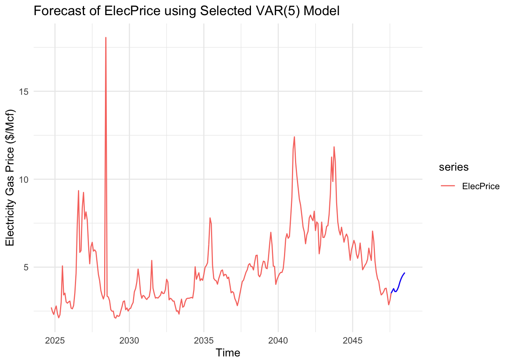
Forecasts indicate that after the current price decline to a low level, a slow recovery is likely to occur over the next 12 months, with prices expected to rise gently from around $3.5/Mcf to around $5/Mcf. In practice, this trend may reflect the rebound in electricity demand against the backdrop of the gradual recovery of the U.S. domestic economy, as well as the price support brought about by the continued growth in export demand.
In addition, as the clean energy transition progresses, the role of natural gas as a transitional energy source in the power system remains important. This means that even if the overall energy structure in the transition to renewable energy, natural gas prices will still be subject to short-term policy regulation, price fluctuations in the international market, as well as seasonal demand changes in the combined impact.
- GasPrice and ElecPrice: The power industry uses a large amount of natural gas to generate electricity, and the price of gas used for power and the overall natural gas price show a high degree of synchronization in terms of price movements, especially during the price peaks around 2021 when there is a clear resonance. This suggests that price changes in the natural gas market can directly impact the power industry's purchasing costs.
- GasPrice vs. OilPrice: As an alternative energy source, natural gas and crude oil prices have a degree of linkage over the long term, especially when there are simultaneous changes in supply and demand in the energy market, such as during the 2008 financial crisis and the early stages of the 2020 epidemic. The two are characterized by time-lagged or synchronized fluctuations in trends.
- ElecPrice and OilPrice: Although the link is not as strong as the previous two, changes in oil prices may also affect electricity prices through cost transmission or market expectations under energy inflationary pressures or supply chain shocks.df_goe <- read.csv("merge_gas_oil.csv")
df_goe <- df_goe[, c("YearMonth", "GasPrice", "OilPrice", "ElecPrice")]
df_goe <- na.omit(df_goe)
df_goe <- df_goe %>%
mutate(YearMonth = as.yearmon(YearMonth, format = "%Y-%m")) %>%
filter(!is.na(GasPrice) & !is.na(OilPrice) & !is.na(ElecPrice))
df_long <- df_goe %>%
pivot_longer(cols = c(GasPrice, OilPrice, ElecPrice),
names_to = "Variable", values_to = "Value")
ggplot(df_long, aes(x = YearMonth, y = Value, color = Variable)) +
geom_line(size = 1) +
facet_wrap(~ Variable, scales = "free_y", ncol = 1) +
labs(title = "Monthly Time Series of GasPrice, OilPrice, and ElecPrice",
x = "Date", y = "Price (USD/Mcf or USD/Barrel)") +
theme_minimal()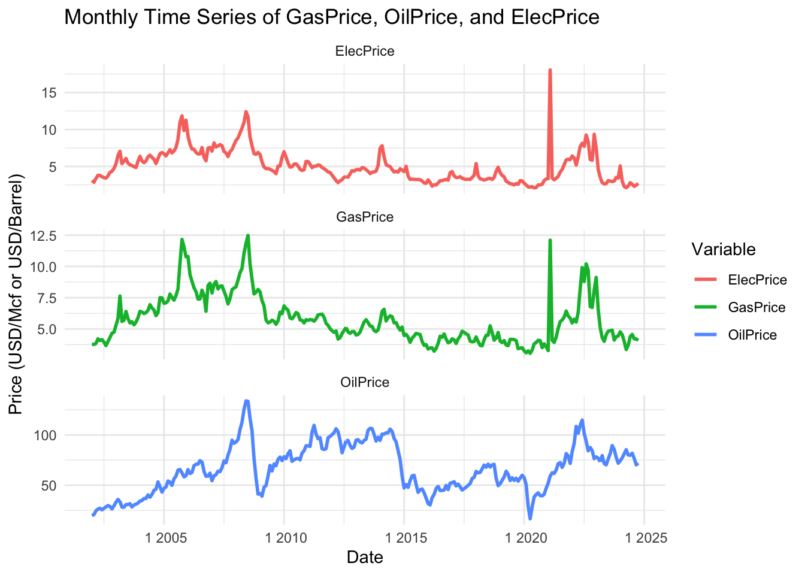
The visualization in the figure above further supports the existence of these relationships. The common volatility of the three time series over multiple time periods, such as the peaks and troughs around 2008, 2014, 2020, and 2022, suggests that there may be Granger causality or cointegration between them, making them suitable for linkage modeling and forecasting using the VAR model.
df_goe_clean <- na.omit(df_goe)
start_year <- year(min(df_goe_clean$YearMonth))
start_month <- month(min(df_goe_clean$YearMonth))
ts_goe <- ts(df_goe_clean[, -1], start = c(start_year, start_month), frequency = 12)
VARselect(ts_goe, lag.max = 10, type = "both")$selection
AIC(n) HQ(n) SC(n) FPE(n)
10 2 2 10
$criteria
1 2 3 4 5 6 7 8
AIC(n) 2.340601 2.212416 2.248901 2.250301 2.245346 2.266598 2.243594 2.256028
HQ(n) 2.422245 2.343045 2.428517 2.478902 2.522934 2.593172 2.619154 2.680574
SC(n) 2.543780 2.537502 2.695895 2.819202 2.936154 3.079314 3.178217 3.312558
FPE(n) 10.387622 9.138274 9.478687 9.493425 9.448739 9.654950 9.439688 9.563459
9 10
AIC(n) 2.260917 2.162222
HQ(n) 2.734449 2.684740
SC(n) 3.439355 3.462567
FPE(n) 9.617528 8.721713We used the VARselect() function and set the maximum lag order to 10. The results show that different criteria recommend different optimal lag orders. AIC and FPE: recommended lag order is 10; The results show that different criteria recommend different optimal lag orders, AIC and FPE: the recommended lag order is 10; HQ and SC: the recommended lag order is 2. In order to evaluate the model performance more comprehensively, we choose two representative models for estimation and comparison: VAR(2) and VAR(10).
cv_rmse_var <- function(ts_data, p, h = 3, initial = 180) {
n <- nrow(ts_data)
actuals <- c()
preds <- c()
for (i in seq(initial, n - h)) {
train_data <- ts_data[1:i, ]
test_data <- ts_data[(i + 1):(i + h), "ElecPrice"]
fit <- VAR(train_data, p = p, type = "const")
fcast <- predict(fit, n.ahead = h)
pred <- fcast$fcst$ElecPrice[1:h, "fcst"]
actuals <- c(actuals, test_data)
preds <- c(preds, pred)
}
rmse <- sqrt(mean((actuals - preds)^2, na.rm = TRUE))
return(rmse)
}rmse_var2 <- cv_rmse_var(ts_goe, p = 2, h = 3, initial = 180)
print(rmse_var2)[1] 2.542754rmse_var10 <- cv_rmse_var(ts_goe, p = 10, h = 3, initial = 180)
print(rmse_var10)[1] 2.586206df_rmse <- data.frame(
Model = c("VAR(2)", "VAR(10)"),
RMSE = c(rmse_var2, rmse_var10)
)ggplot(df_rmse, aes(x = Model, y = RMSE, fill = Model)) +
geom_col(width = 0.6) +
labs(title = "RMSE Comparison of VAR Models (3-Month Forecast)",
y = "RMSE (ElecPrice)",
x = "VAR Model (p)") +
theme_minimal()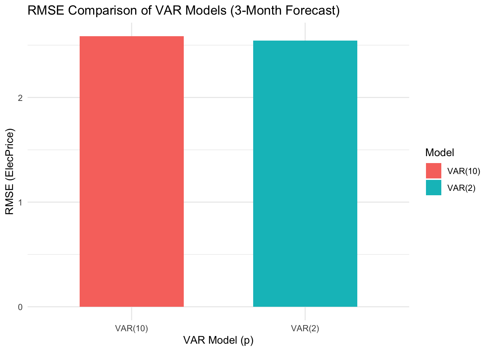
Based on the comparison of the RMSE of the two models, VAR (2) has lower RMSE, so VAR (2) is the best model and the final model
class(df_goe$YearMonth)[1] "yearmon"df_goe$YearMonth <- as.yearmon(df_goe$YearMonth, format = "%Y-%m")
df_goe$YearMonth <- as.Date(df_goe$YearMonth)
df_goe <- df_goe[, c("YearMonth", "GasPrice", "OilPrice", "ElecPrice")]
df_goe <- na.omit(df_goe)
ts_goe <- ts(df_goe[, -1],
start = c(year(min(df_goe$YearMonth)), month(min(df_goe$YearMonth))),
frequency = 12)
fit_var2 <- VAR(ts_goe, p = 2, type = "both")
summary(fit_var2)
VAR Estimation Results:
=========================
Endogenous variables: GasPrice, OilPrice, ElecPrice
Deterministic variables: both
Sample size: 272
Log Likelihood: -1423.683
Roots of the characteristic polynomial:
0.9176 0.8733 0.6191 0.379 0.2127 0.2127
Call:
VAR(y = ts_goe, p = 2, type = "both")
Estimation results for equation GasPrice:
=========================================
GasPrice = GasPrice.l1 + OilPrice.l1 + ElecPrice.l1 + GasPrice.l2 + OilPrice.l2 + ElecPrice.l2 + const + trend
Estimate Std. Error t value Pr(>|t|)
GasPrice.l1 0.4701746 0.1398726 3.361 0.000890 ***
OilPrice.l1 0.0135197 0.0093082 1.452 0.147566
ElecPrice.l1 0.1501739 0.0946887 1.586 0.113942
GasPrice.l2 0.3044221 0.1276573 2.385 0.017800 *
OilPrice.l2 -0.0082407 0.0093533 -0.881 0.379094
ElecPrice.l2 -0.0847928 0.0878334 -0.965 0.335237
const 0.9207582 0.2632706 3.497 0.000551 ***
trend -0.0022250 0.0008608 -2.585 0.010281 *
---
Signif. codes: 0 '***' 0.001 '**' 0.01 '*' 0.05 '.' 0.1 ' ' 1
Residual standard error: 0.8879 on 264 degrees of freedom
Multiple R-Squared: 0.792, Adjusted R-squared: 0.7865
F-statistic: 143.6 on 7 and 264 DF, p-value: < 2.2e-16
Estimation results for equation OilPrice:
=========================================
OilPrice = GasPrice.l1 + OilPrice.l1 + ElecPrice.l1 + GasPrice.l2 + OilPrice.l2 + ElecPrice.l2 + const + trend
Estimate Std. Error t value Pr(>|t|)
GasPrice.l1 -1.037508 0.874795 -1.186 0.2367
OilPrice.l1 1.301693 0.058216 22.360 < 2e-16 ***
ElecPrice.l1 0.895293 0.592205 1.512 0.1318
GasPrice.l2 0.224097 0.798398 0.281 0.7792
OilPrice.l2 -0.349405 0.058498 -5.973 7.5e-09 ***
ElecPrice.l2 -0.058625 0.549330 -0.107 0.9151
const 3.366355 1.646555 2.044 0.0419 *
trend 0.003039 0.005384 0.565 0.5729
---
Signif. codes: 0 '***' 0.001 '**' 0.01 '*' 0.05 '.' 0.1 ' ' 1
Residual standard error: 5.553 on 264 degrees of freedom
Multiple R-Squared: 0.9472, Adjusted R-squared: 0.9458
F-statistic: 677 on 7 and 264 DF, p-value: < 2.2e-16
Estimation results for equation ElecPrice:
==========================================
ElecPrice = GasPrice.l1 + OilPrice.l1 + ElecPrice.l1 + GasPrice.l2 + OilPrice.l2 + ElecPrice.l2 + const + trend
Estimate Std. Error t value Pr(>|t|)
GasPrice.l1 -0.275269 0.204745 -1.344 0.17996
OilPrice.l1 0.015168 0.013625 1.113 0.26662
ElecPrice.l1 0.685779 0.138605 4.948 1.34e-06 ***
GasPrice.l2 0.402382 0.186864 2.153 0.03220 *
OilPrice.l2 -0.009014 0.013691 -0.658 0.51086
ElecPrice.l2 -0.030698 0.128570 -0.239 0.81147
const 1.102868 0.385374 2.862 0.00455 **
trend -0.003728 0.001260 -2.959 0.00337 **
---
Signif. codes: 0 '***' 0.001 '**' 0.01 '*' 0.05 '.' 0.1 ' ' 1
Residual standard error: 1.3 on 264 degrees of freedom
Multiple R-Squared: 0.6587, Adjusted R-squared: 0.6496
F-statistic: 72.77 on 7 and 264 DF, p-value: < 2.2e-16
Covariance matrix of residuals:
GasPrice OilPrice ElecPrice
GasPrice 0.7884 0.6103 1.0380
OilPrice 0.6103 30.8396 0.8721
ElecPrice 1.0380 0.8721 1.6894
Correlation matrix of residuals:
GasPrice OilPrice ElecPrice
GasPrice 1.0000 0.1238 0.8994
OilPrice 0.1238 1.0000 0.1208
ElecPrice 0.8994 0.1208 1.0000forecast_goe <- predict(fit_var2, n.ahead = 12)
elec_pred <- forecast_goe$fcst$ElecPrice[, "fcst"]
elec_hist <- data.frame(YearMonth = df_goe$YearMonth, ElecPrice = df_goe$ElecPrice)
last_date <- tail(elec_hist$YearMonth, 1)
elec_pred_dates <- seq(from = last_date %m+% months(1), by = "month", length.out = 12)
df_pred <- data.frame(YearMonth = elec_pred_dates, ElecPrice = elec_pred)Equation
\[ \begin{aligned} \mathrm{GasPrice}t &= 0.4701746\,\mathrm{GasPrice}{t-1} +0.0135197\,\mathrm{OilPrice}{t-1} +0.1501739\,\mathrm{ElecPrice}{t-1}\\ &\quad+0.3044221\,\mathrm{GasPrice}{t-2} -0.0082407\,\mathrm{OilPrice}{t-2} -0.0847928\,\mathrm{ElecPrice}{t-2}\\ &\quad+0.9207582 -0.0022250\;t \;+\;\varepsilon{1,t}\,. \end{aligned} \]
\[ \begin{aligned} \mathrm{OilPrice}t &= -0.0259251\,\mathrm{GasPrice}{t-1} +0.9735693\,\mathrm{OilPrice}{t-1} +0.8952930\,\mathrm{ElecPrice}{t-1}\\ &\quad+0.2240970\,\mathrm{GasPrice}{t-2} -0.3494050\,\mathrm{OilPrice}{t-2} -0.0586250\,\mathrm{ElecPrice}{t-2}\\ &\quad+3.3663550 +0.0030390\;t \;+\;\varepsilon{2,t}\,. \end{aligned} \]
\[ \begin{aligned} \mathrm{ElecPrice}t &= -0.2752690\,\mathrm{GasPrice}{t-1} +0.0151680\,\mathrm{OilPrice}{t-1} +0.6857790\,\mathrm{ElecPrice}{t-1}\\ &\quad+0.4023820\,\mathrm{GasPrice}{t-2} -0.0090140\,\mathrm{OilPrice}{t-2} -0.0306980\,\mathrm{ElecPrice}{t-2}\\ &\quad+1.1028680 -0.0037280\;t \;+\;\varepsilon{3,t}\,. \end{aligned} \]
ggplot() +
geom_line(data = elec_hist, aes(x = YearMonth, y = ElecPrice), color = "black", size = 1) +
geom_line(data = df_pred, aes(x = YearMonth, y = ElecPrice), color = "blue", size = 1, linetype = "dashed") +
geom_point(data = df_pred, aes(x = YearMonth, y = ElecPrice), color = "blue") +
labs(title = "Forecast of ElecPrice Using VAR(2) Model",
x = "Date", y = "Electric Power Sector Natural Gas Price ($/Mcf)") +
theme_minimal()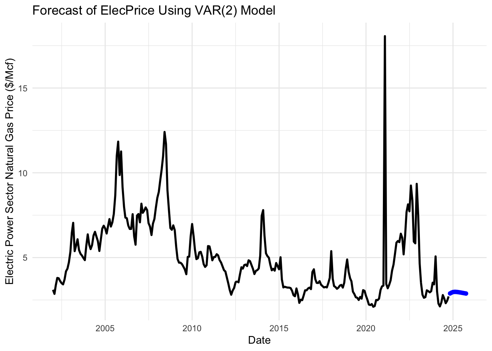
We observe a slight upward trend in prices. The forecast chart shows that future prices have recovered slightly from recent lows, but overall remain at the lower end of the historical volatility range.
Combined with historical data that shows natural gas prices gradually dropping back to pre-Epidemic levels after experiencing significant volatility in 2022, the current VAR model projections suggest that dramatic volatility similar to that seen in the past will not occur in the coming year. This forecast has practical implications and may reflect contextual factors such as the gradual recovery of the supply chain, the continuing transition of the energy mix, and the stabilization of the fuel mix in the power sector.
In addition, GasPrice and OilPrice are used as endogenous variables in the model, further strengthening the predictive power of ElecPrice. This suggests that the construction of a multivariate VAR model can more accurately capture the natural gas price trend than a univariate model in the context of strong energy market linkages.